Note
Go to the end to download the full example code.
MOSTest¶
Eamplify MOSTest approach which performs a multi-phenotype GWAS.
The method was first introduced in this paper from [van der Meer, Nat. Comm.,2020](https://doi.org/10.1038/s41467-020-17368-1). The current example consider the situation where the phenotypes are linearly dependent.
import matplotlib.pyplot as plt
import numpy as np
import pandas as pd
import seaborn as sns
import statsmodels.api as sm
from scipy.stats import gamma, norm
from sklearn.cross_decomposition import CCA
from sklearn.preprocessing import StandardScaler
from tqdm.auto import tqdm
np.set_printoptions(suppress=False, precision=2)
Building the dataset¶
The multivariate phenotype¶
First, a multi variate phenotype is defined. Each trait is supposed to characterize a different sub-populations within the sample.
The number of traits is
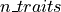
traitsThe number of samples (subjects) is
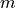
.
For example, each trait of the multivariate phenotype represents a dimension of a latent space, which are supposed to encode information for one specific part of the global population. For each sub-population is generated the data (matching in fact one dimension). For the first sub-population, the subjects have a value attributed. Those values follow a normal distribution. The subjects are sorted by increasing values. Then, all the other subjects have a 0 value. The same process is repeated for all the sub-populations.
For our simulation, and for each given trait, we will arbitrarily draw some
specific samples according to a distribution and will zero the other
samples. Without loss of generality we will consider the  first samples of trait
first samples of trait
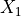
(and zero the others), then we will consider the samples following the ones of trait
samples following the ones of trait
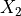
and zero the other samples, etc.Then, a certain amount of noise is added.
# dimensions of the simulated data
m = 5000 # sample size
n_traits = 4 # number of uncorrelated traits
trait_names = [f'X{i}' for i in range(1, n_traits + 1)]
print(trait_names)
['X1', 'X2', 'X3', 'X4']
Set the size of the different sub-population of subjects in each trait
Now let’s generate the phenotypes
def generate_traits(trait_runlengthes, list_sigma=None, law='normal'):
"""
Generate traits based on a given distribution law.
Parameters
----------
trait_runlengthes: numpy array of integers
each representing the number of non zero samples for each trait.
list_sigma: list of floats
standard deviations for each trait.
law: string
distribution law to use ('normal' or 'gamma').
Returns
-------
mul_phenotype: 2D numpy array
each column containing the generated trait data.
"""
trait_runlengthes = np.array(trait_runlengthes)
if list_sigma is None:
list_sigma = [1 for i in range(len(trait_runlengthes))]
list_X = []
if law == 'normal':
for i in range(len(trait_runlengthes)):
X = np.concatenate([
np.zeros(trait_runlengthes[0:i].sum()),
np.sort(
np.random.normal(
loc=0,
scale=list_sigma[i],
size=trait_runlengthes[i]
)
),
np.zeros(
trait_runlengthes.sum() -
trait_runlengthes[0:i + 1].sum()
)
])
list_X.append(X)
elif law == 'gamma':
for i in range(len(trait_runlengthes)):
X = np.concatenate([
np.zeros(trait_runlengthes[0:i].sum()),
np.sort(
gamma.rvs(
a=2,
scale=list_sigma[i],
size=trait_runlengthes[i]
)
),
np.zeros(
trait_runlengthes.sum() -
trait_runlengthes[0:i + 1].sum()
)
])
list_X.append(X)
else:
raise ValueError(
"Unsupported distribution law. Use 'normal' or 'gamma'."
)
mul_phenotype = np.array(list_X).T
return mul_phenotype
mul_phenotype_latent = generate_traits(np.array([m1, m2, m3, m4]))
# we keep the "latent" for future plots
mul_phenotype = mul_phenotype_latent.copy()
# Mean and Variance
print('Mean for each column:', mul_phenotype.mean(axis=0))
print('Variance for each column:', mul_phenotype.var(axis=0))
fig, ax = plt.subplots(figsize=(12, 3))
c = ax.pcolor(mul_phenotype, cmap="jet") # or "viridis", "plasma", etc.
# Set ticks in the middle of each cell
ax.set_xticks(np.arange(0.5, mul_phenotype.shape[1], 1))
# Set tick labels
ax.set_xticklabels(trait_names)
fig.colorbar(c, ax=ax)
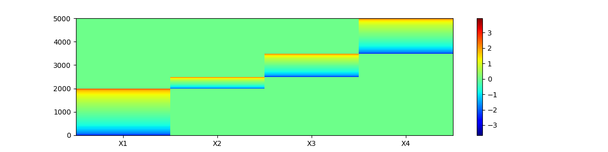
Mean for each column: [ 0. 0. -0.01 -0.01]
Variance for each column: [0.44 0.1 0.21 0.29]
<matplotlib.colorbar.Colorbar object at 0x7ffa516cbe00>
Let us add noise Sparse representation space with noise
noise = True
if noise:
for i in range(len(trait_names)):
mul_phenotype[:, i] += np.random.randn(m) * 4
fig, ax = plt.subplots(figsize=(12, 3))
c = ax.pcolor(mul_phenotype, cmap="jet") # or "viridis", "plasma", etc.
# Set ticks in the middle of each cell
ax.set_xticks(np.arange(0.5, mul_phenotype.shape[1], 1))
# Set tick labels
ax.set_xticklabels(trait_names)
fig.colorbar(c, ax=ax)
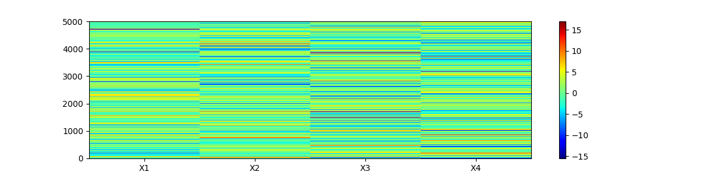
<matplotlib.colorbar.Colorbar object at 0x7ffa51006090>
Let’s now add a duplicate of two columns.
n_traits += 2
trait_names = [f'X{i}' for i in range(1, n_traits + 1)]
print(trait_names)
mul_phenotype = np.hstack((mul_phenotype, np.tile(mul_phenotype[:, [-1]], 1)))
mul_phenotype = np.hstack((mul_phenotype, np.tile(mul_phenotype[:, [0]], 1)))
mul_phenotype[:, -1] += np.random.randn(m) * 2
mul_phenotype[:, -2] += np.random.randn(m) * 2
['X1', 'X2', 'X3', 'X4', 'X5', 'X6']
Mean and Variance
print(f"Mean for each column before scaling: {mul_phenotype.mean(axis=0)}")
print(f"Variance for each column before scaling: {mul_phenotype.var(axis=0)}")
scaler = StandardScaler()
mul_phenotype = scaler.fit_transform(mul_phenotype)
# Mean and Variance
print(f"Mean for each column before scaling: {mul_phenotype.mean(axis=0)}")
print(f"Variance for each column before scaling: {mul_phenotype.var(axis=0)}")
fig, ax = plt.subplots(figsize=(12, 3))
c = ax.pcolor(mul_phenotype, cmap="jet") # or "viridis", "plasma", etc.
# Set ticks in the middle of each cell
ax.set_xticks(np.arange(0.5, mul_phenotype.shape[1], 1))
# Set tick labels
ax.set_xticklabels(trait_names)
fig.colorbar(c, ax=ax)
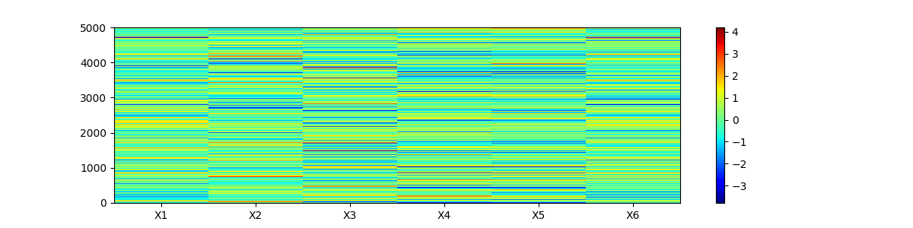
Mean for each column before scaling: [ 0.04 -0.01 -0.11 -0.04 -0.05 0.03]
Variance for each column before scaling: [16.43 16.39 16.51 15.9 20.21 20.47]
Mean for each column before scaling: [3.97e-17 3.26e-17 5.94e-17 5.70e-17 2.27e-17 5.89e-17]
Variance for each column before scaling: [1. 1. 1. 1. 1. 1.]
<matplotlib.colorbar.Colorbar object at 0x7ffa5105e990>
Definition of the genotype¶
Let’s define the genotype (one variant). The linspace will naturally corralate with the sorted traits. The genotype is defined to match the normal distribution, ie the subjects with a low value have a 0 as genotype, the subjects in the middle have a 1 and the subjects with a high value have a 2. The genotype correspond to the number of minor allele for a given fake SNP.
genotype = np.concatenate([
np.linspace(0, 2, m1), np.linspace(0, 2, m2), np.linspace(0, 2, m3),
np.linspace(0, 2, m4)
])
genotype = genotype.round()
Let’s plot the genotype and the (latent) multivariate phenotype
# two subplots
fig, axs = plt.subplots(1, 2, figsize=(12, 3))
axs[0].scatter(genotype, range(m))
c = axs[1].pcolor(mul_phenotype_latent, cmap="jet")
axs[1].set_xticks(np.arange(0.5, mul_phenotype_latent.shape[1], 1))
axs[1].set_xticklabels(trait_names[:-2])
fig.colorbar(c, ax=axs[1])
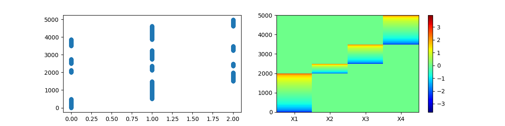
<matplotlib.colorbar.Colorbar object at 0x7ffa37a3e090>
A few description plots on the simulated data¶
Correlation between the different dimensions
corr = np.corrcoef(mul_phenotype, rowvar=False)
sns.heatmap(corr, cmap="YlOrBr", annot=True, fmt=".2f")
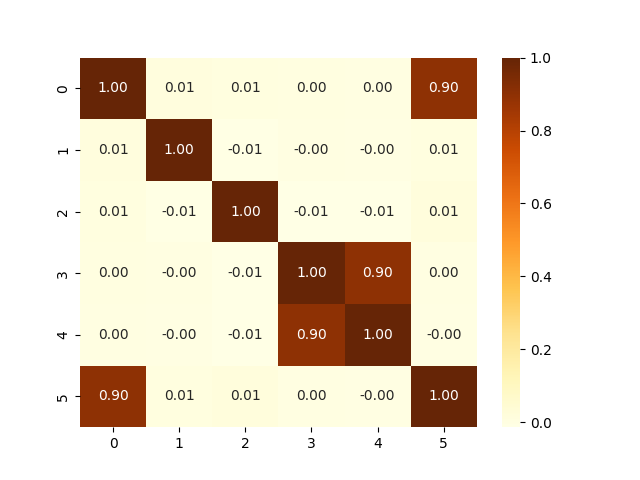
<Axes: >
Lets study the correlation between the different traits of the mul_phenotype and with the genotype one the one hand or a permuted genotype on the other hand
# Consider a pandas dataframe for better handling
mpheno_geno = pd.DataFrame(
mul_phenotype,
columns=[f'X{i}' for i in range(1, n_traits + 1)]
)
mpheno_geno['Genotype'] = genotype
mpheno_geno['PermGenotype'] = np.random.permutation(genotype)
print(mpheno_geno)
correlations = mpheno_geno.corr()
correlations[['Genotype', 'PermGenotype']].drop(['Genotype', 'PermGenotype'])
X1 X2 X3 ... X6 Genotype PermGenotype
0 -0.639411 1.549784 0.279945 ... 0.016496 0.0 2.0
1 -2.404105 -0.722766 0.249849 ... -2.291917 0.0 1.0
2 -0.637478 -0.172327 0.883873 ... -0.836182 0.0 0.0
3 -2.765282 -0.490542 -0.140760 ... -1.852978 0.0 1.0
4 0.052655 0.123169 -1.426555 ... 0.854301 0.0 0.0
... ... ... ... ... ... ... ...
4995 -0.370844 0.073407 0.369764 ... -0.489235 2.0 0.0
4996 -1.414216 -1.490122 1.773640 ... -1.268980 2.0 2.0
4997 -1.753708 -0.407375 0.118762 ... -1.966678 2.0 2.0
4998 1.600613 -0.187363 0.362217 ... 1.649203 2.0 2.0
4999 -0.451207 1.509312 1.095628 ... -1.081314 2.0 1.0
[5000 rows x 8 columns]
The MOSTest principles¶
Compute the classical association metrics¶
Also referred as “Univariate GWAS procedure” in [Van der Meer et al., 2022]
In order to obtain t-val, p-val of association of the genotype for each trait of the mul_phenotype a univariate regression is performed. The data frame mpheno_geno is used.
Can be seen from the results that the genotype predicts each dimension.
def UniVar_reg(mpheno_geno, traits):
geno = sm.add_constant(mpheno_geno['Genotype'])
list_betas_orig = []
list_z_score_orig = []
pd_list = []
for trait in traits:
model_orig = sm.OLS(mpheno_geno[trait], geno)
results_orig = model_orig.fit()
pd_list.append(pd.DataFrame(
{'Trait': [trait],
'Beta': [results_orig.params.iloc[1]],
't-value': [results_orig.tvalues.iloc[1]],
'p-value': [results_orig.pvalues.iloc[1]]}
)
)
list_betas_orig.append(results_orig.params.iloc[1])
list_z_score_orig.append(results_orig.tvalues.iloc[1])
results = pd.concat(pd_list, ignore_index=True)
results.set_index('Trait', inplace=True)
return results, list_betas_orig, list_z_score_orig
univariates_gwases, list_betas_orig, list_z_score_orig = UniVar_reg(
mpheno_geno, trait_names
)
print(univariates_gwases)
Beta t-value p-value
Trait
X1 0.168344 8.475796 3.036509e-17
X2 0.048729 2.437426 1.482689e-02
X3 0.037390 1.869788 6.157169e-02
X4 0.067907 3.398594 6.826267e-04
X5 0.059919 2.998058 2.730434e-03
X6 0.148657 7.472738 9.220251e-14
The Mahalanobis norm for $H_0$¶
The following function compute the Mahalanobis norm considering permuted genotype to assess the association under the null.
Retaining the notation of the Van der Meer’s paper, we define the
mahalanobis_norm_perm. The parameters are the mul_phenotype, the genotype
(here the mpheno_geno parameter). The nb_perm_pheno is to specify the number
of permutation. The  parameter is the correlation matrix of the
paper. Please note that is NOT computed the same way as in the
paper.
parameter is the correlation matrix of the
paper. Please note that is NOT computed the same way as in the
paper.
def mahalanobis_norm_perm(mpheno_geno, R, nb_perm_geno=1):
"""
Input:
mpheno_geno: pandas dataframe
contains the traits phenotype and the genotype data
('Genotype' column).
R: numpy array,
correlation matrix of the traits in mpheno_geno.
nb_perm_geno: int
Output:
list_mahalanobis_norm_perm: list of float
"""
list_mahalanobis_norm_perm = []
for _i in tqdm(range(nb_perm_geno), 'Permutation'):
mpheno_geno['PermGenotype'] = np.random.permutation(
mpheno_geno['Genotype']
)
perm_geno = sm.add_constant(mpheno_geno['PermGenotype'])
list_z_score_perm = []
traits = mpheno_geno.drop(
columns=["Genotype", "PermGenotype"]
).columns.tolist()
for trait in traits:
model_perm = sm.OLS(mpheno_geno[trait], perm_geno)
results_perm = model_perm.fit()
list_z_score_perm.append(results_perm.tvalues.iloc[1])
z_score_perm = np.array(list_z_score_perm)
mahalanobis_norm_perm = (
(z_score_perm @ np.linalg.inv(R)) @ z_score_perm.T
)
list_mahalanobis_norm_perm.append(mahalanobis_norm_perm)
return list_mahalanobis_norm_perm
nb_perm_geno = 2
list_mahalanobis_norm_perm = mahalanobis_norm_perm(
mpheno_geno, corr, nb_perm_geno
)
print(list_mahalanobis_norm_perm)
Permutation: 0%| | 0/2 [00:00<?, ?it/s]
Permutation: 100%|██████████| 2/2 [00:00<00:00, 118.17it/s]
[np.float64(8.46038586111331), np.float64(3.4322949955505013)]
The MOSTest idea¶
The terms of the list list_mahalanobis_norm_perm contain values of the statistics
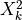
of the paper. They follow the distribution the two parameter distribution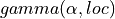
.Let’s fit this gamma function.
def fit_gamma(list_mahalanobis_norm_perm, plot_fit=False):
"""
Fit a gamma distribution to the list of Mahalanobis norms.
Parameters
----------
list_mahalanobis_norm_perm: list of float,
Mahalanobis norms from permutations.
plot_fit: bool, optional,
whether to plot the fitted gamma distribution against the data.
Returns
-------
fitted_params: tuple,
parameters of the fitted gamma distribution
(fit_alpha, fit_loc, fit_scale).
"""
fit_alpha, fit_loc, fit_scale = gamma.fit(list_mahalanobis_norm_perm)
nb_perm_geno = len(list_mahalanobis_norm_perm)
if plot_fit:
plt.hist(
gamma.rvs(
a=fit_alpha, loc=fit_loc, scale=fit_scale, size=nb_perm_geno
),
alpha=0.5, bins=60
)
plt.hist(list_mahalanobis_norm_perm, alpha=0.5, bins=60)
return fit_alpha, fit_loc, fit_scale
# Generate a list of Mahalanobis norms from permutations
list_mahalanobis_norm_perm = mahalanobis_norm_perm(mpheno_geno, corr, 5000)
print('Distributions: blue is theoretical gamma and orange is the empirical '
'distribution of the Mahalanobis norms from permutations')
alpha, loc, scale = fit_gamma(list_mahalanobis_norm_perm, plot_fit=True)
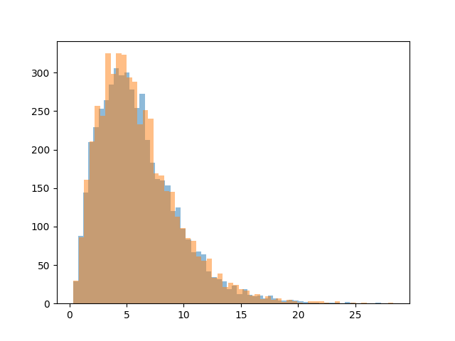
Permutation: 0%| | 0/5000 [00:00<?, ?it/s]
Permutation: 0%| | 19/5000 [00:00<00:26, 186.33it/s]
Permutation: 1%| | 41/5000 [00:00<00:24, 200.71it/s]
Permutation: 1%|▏ | 63/5000 [00:00<00:23, 206.40it/s]
Permutation: 2%|▏ | 84/5000 [00:00<00:23, 207.74it/s]
Permutation: 2%|▏ | 106/5000 [00:00<00:23, 209.19it/s]
Permutation: 3%|▎ | 128/5000 [00:00<00:23, 210.15it/s]
Permutation: 3%|▎ | 150/5000 [00:00<00:22, 211.13it/s]
Permutation: 3%|▎ | 172/5000 [00:00<00:22, 211.59it/s]
Permutation: 4%|▍ | 194/5000 [00:00<00:22, 211.63it/s]
Permutation: 4%|▍ | 216/5000 [00:01<00:22, 211.38it/s]
Permutation: 5%|▍ | 238/5000 [00:01<00:22, 211.75it/s]
Permutation: 5%|▌ | 260/5000 [00:01<00:22, 211.06it/s]
Permutation: 6%|▌ | 282/5000 [00:01<00:22, 211.34it/s]
Permutation: 6%|▌ | 304/5000 [00:01<00:22, 212.08it/s]
Permutation: 7%|▋ | 326/5000 [00:01<00:22, 212.14it/s]
Permutation: 7%|▋ | 348/5000 [00:01<00:22, 211.42it/s]
Permutation: 7%|▋ | 370/5000 [00:01<00:21, 212.09it/s]
Permutation: 8%|▊ | 392/5000 [00:01<00:21, 212.74it/s]
Permutation: 8%|▊ | 414/5000 [00:01<00:21, 213.03it/s]
Permutation: 9%|▊ | 436/5000 [00:02<00:21, 212.89it/s]
Permutation: 9%|▉ | 458/5000 [00:02<00:21, 213.36it/s]
Permutation: 10%|▉ | 480/5000 [00:02<00:21, 213.39it/s]
Permutation: 10%|█ | 502/5000 [00:02<00:21, 213.50it/s]
Permutation: 10%|█ | 524/5000 [00:02<00:20, 213.37it/s]
Permutation: 11%|█ | 546/5000 [00:02<00:20, 212.83it/s]
Permutation: 11%|█▏ | 568/5000 [00:02<00:20, 212.53it/s]
Permutation: 12%|█▏ | 590/5000 [00:02<00:20, 212.48it/s]
Permutation: 12%|█▏ | 612/5000 [00:02<00:20, 213.22it/s]
Permutation: 13%|█▎ | 634/5000 [00:02<00:20, 213.00it/s]
Permutation: 13%|█▎ | 656/5000 [00:03<00:20, 213.27it/s]
Permutation: 14%|█▎ | 678/5000 [00:03<00:20, 213.48it/s]
Permutation: 14%|█▍ | 700/5000 [00:03<00:20, 212.93it/s]
Permutation: 14%|█▍ | 722/5000 [00:03<00:20, 213.10it/s]
Permutation: 15%|█▍ | 744/5000 [00:03<00:19, 213.35it/s]
Permutation: 15%|█▌ | 766/5000 [00:03<00:19, 212.21it/s]
Permutation: 16%|█▌ | 788/5000 [00:03<00:19, 212.46it/s]
Permutation: 16%|█▌ | 810/5000 [00:03<00:19, 212.81it/s]
Permutation: 17%|█▋ | 832/5000 [00:03<00:19, 213.08it/s]
Permutation: 17%|█▋ | 854/5000 [00:04<00:19, 213.06it/s]
Permutation: 18%|█▊ | 876/5000 [00:04<00:19, 213.33it/s]
Permutation: 18%|█▊ | 898/5000 [00:04<00:19, 213.27it/s]
Permutation: 18%|█▊ | 920/5000 [00:04<00:19, 213.31it/s]
Permutation: 19%|█▉ | 942/5000 [00:04<00:19, 213.42it/s]
Permutation: 19%|█▉ | 964/5000 [00:04<00:18, 213.11it/s]
Permutation: 20%|█▉ | 986/5000 [00:04<00:18, 212.49it/s]
Permutation: 20%|██ | 1008/5000 [00:04<00:18, 212.30it/s]
Permutation: 21%|██ | 1030/5000 [00:04<00:18, 212.54it/s]
Permutation: 21%|██ | 1052/5000 [00:04<00:18, 212.68it/s]
Permutation: 21%|██▏ | 1074/5000 [00:05<00:18, 213.00it/s]
Permutation: 22%|██▏ | 1096/5000 [00:05<00:18, 212.24it/s]
Permutation: 22%|██▏ | 1118/5000 [00:05<00:18, 211.29it/s]
Permutation: 23%|██▎ | 1140/5000 [00:05<00:18, 210.89it/s]
Permutation: 23%|██▎ | 1162/5000 [00:05<00:18, 210.85it/s]
Permutation: 24%|██▎ | 1184/5000 [00:05<00:18, 211.14it/s]
Permutation: 24%|██▍ | 1206/5000 [00:05<00:17, 211.18it/s]
Permutation: 25%|██▍ | 1228/5000 [00:05<00:17, 211.64it/s]
Permutation: 25%|██▌ | 1250/5000 [00:05<00:17, 212.17it/s]
Permutation: 25%|██▌ | 1272/5000 [00:05<00:17, 212.86it/s]
Permutation: 26%|██▌ | 1294/5000 [00:06<00:17, 211.01it/s]
Permutation: 26%|██▋ | 1316/5000 [00:06<00:17, 211.53it/s]
Permutation: 27%|██▋ | 1338/5000 [00:06<00:17, 211.78it/s]
Permutation: 27%|██▋ | 1360/5000 [00:06<00:17, 212.69it/s]
Permutation: 28%|██▊ | 1382/5000 [00:06<00:16, 212.93it/s]
Permutation: 28%|██▊ | 1404/5000 [00:06<00:16, 212.18it/s]
Permutation: 29%|██▊ | 1426/5000 [00:06<00:16, 212.15it/s]
Permutation: 29%|██▉ | 1448/5000 [00:06<00:16, 212.24it/s]
Permutation: 29%|██▉ | 1470/5000 [00:06<00:16, 212.56it/s]
Permutation: 30%|██▉ | 1492/5000 [00:07<00:16, 212.16it/s]
Permutation: 30%|███ | 1514/5000 [00:07<00:16, 212.05it/s]
Permutation: 31%|███ | 1536/5000 [00:07<00:16, 211.42it/s]
Permutation: 31%|███ | 1558/5000 [00:07<00:16, 211.98it/s]
Permutation: 32%|███▏ | 1580/5000 [00:07<00:16, 212.41it/s]
Permutation: 32%|███▏ | 1602/5000 [00:07<00:15, 212.73it/s]
Permutation: 32%|███▏ | 1624/5000 [00:07<00:15, 211.48it/s]
Permutation: 33%|███▎ | 1646/5000 [00:07<00:15, 211.35it/s]
Permutation: 33%|███▎ | 1668/5000 [00:07<00:15, 212.07it/s]
Permutation: 34%|███▍ | 1690/5000 [00:07<00:15, 212.64it/s]
Permutation: 34%|███▍ | 1712/5000 [00:08<00:15, 212.77it/s]
Permutation: 35%|███▍ | 1734/5000 [00:08<00:15, 212.74it/s]
Permutation: 35%|███▌ | 1756/5000 [00:08<00:15, 210.98it/s]
Permutation: 36%|███▌ | 1778/5000 [00:08<00:15, 211.84it/s]
Permutation: 36%|███▌ | 1800/5000 [00:08<00:15, 212.67it/s]
Permutation: 36%|███▋ | 1822/5000 [00:08<00:14, 212.87it/s]
Permutation: 37%|███▋ | 1844/5000 [00:08<00:14, 212.57it/s]
Permutation: 37%|███▋ | 1866/5000 [00:08<00:14, 212.83it/s]
Permutation: 38%|███▊ | 1888/5000 [00:08<00:14, 213.13it/s]
Permutation: 38%|███▊ | 1910/5000 [00:09<00:14, 213.35it/s]
Permutation: 39%|███▊ | 1932/5000 [00:09<00:14, 213.61it/s]
Permutation: 39%|███▉ | 1954/5000 [00:09<00:14, 213.20it/s]
Permutation: 40%|███▉ | 1976/5000 [00:09<00:14, 212.27it/s]
Permutation: 40%|███▉ | 1998/5000 [00:09<00:14, 212.54it/s]
Permutation: 40%|████ | 2020/5000 [00:09<00:13, 212.95it/s]
Permutation: 41%|████ | 2042/5000 [00:09<00:13, 213.46it/s]
Permutation: 41%|████▏ | 2064/5000 [00:09<00:13, 211.61it/s]
Permutation: 42%|████▏ | 2086/5000 [00:09<00:13, 211.54it/s]
Permutation: 42%|████▏ | 2108/5000 [00:09<00:13, 211.94it/s]
Permutation: 43%|████▎ | 2130/5000 [00:10<00:13, 211.95it/s]
Permutation: 43%|████▎ | 2152/5000 [00:10<00:13, 211.88it/s]
Permutation: 43%|████▎ | 2174/5000 [00:10<00:13, 212.12it/s]
Permutation: 44%|████▍ | 2196/5000 [00:10<00:13, 212.04it/s]
Permutation: 44%|████▍ | 2218/5000 [00:10<00:13, 212.72it/s]
Permutation: 45%|████▍ | 2240/5000 [00:10<00:12, 212.94it/s]
Permutation: 45%|████▌ | 2262/5000 [00:10<00:12, 213.27it/s]
Permutation: 46%|████▌ | 2284/5000 [00:10<00:12, 213.16it/s]
Permutation: 46%|████▌ | 2306/5000 [00:10<00:12, 213.75it/s]
Permutation: 47%|████▋ | 2328/5000 [00:10<00:12, 213.42it/s]
Permutation: 47%|████▋ | 2350/5000 [00:11<00:12, 213.49it/s]
Permutation: 47%|████▋ | 2372/5000 [00:11<00:12, 213.48it/s]
Permutation: 48%|████▊ | 2394/5000 [00:11<00:12, 212.48it/s]
Permutation: 48%|████▊ | 2416/5000 [00:11<00:12, 212.60it/s]
Permutation: 49%|████▉ | 2438/5000 [00:11<00:12, 212.89it/s]
Permutation: 49%|████▉ | 2460/5000 [00:11<00:11, 212.74it/s]
Permutation: 50%|████▉ | 2482/5000 [00:11<00:11, 211.83it/s]
Permutation: 50%|█████ | 2504/5000 [00:11<00:11, 212.27it/s]
Permutation: 51%|█████ | 2526/5000 [00:11<00:11, 212.59it/s]
Permutation: 51%|█████ | 2548/5000 [00:12<00:11, 212.78it/s]
Permutation: 51%|█████▏ | 2570/5000 [00:12<00:11, 211.37it/s]
Permutation: 52%|█████▏ | 2592/5000 [00:12<00:11, 212.04it/s]
Permutation: 52%|█████▏ | 2614/5000 [00:12<00:11, 211.95it/s]
Permutation: 53%|█████▎ | 2636/5000 [00:12<00:11, 212.22it/s]
Permutation: 53%|█████▎ | 2658/5000 [00:12<00:11, 212.77it/s]
Permutation: 54%|█████▎ | 2680/5000 [00:12<00:10, 212.90it/s]
Permutation: 54%|█████▍ | 2702/5000 [00:12<00:10, 211.40it/s]
Permutation: 54%|█████▍ | 2724/5000 [00:12<00:10, 210.39it/s]
Permutation: 55%|█████▍ | 2746/5000 [00:12<00:10, 210.28it/s]
Permutation: 55%|█████▌ | 2768/5000 [00:13<00:10, 211.10it/s]
Permutation: 56%|█████▌ | 2790/5000 [00:13<00:10, 211.69it/s]
Permutation: 56%|█████▌ | 2812/5000 [00:13<00:10, 212.51it/s]
Permutation: 57%|█████▋ | 2834/5000 [00:13<00:10, 212.40it/s]
Permutation: 57%|█████▋ | 2856/5000 [00:13<00:10, 213.06it/s]
Permutation: 58%|█████▊ | 2878/5000 [00:13<00:09, 213.35it/s]
Permutation: 58%|█████▊ | 2900/5000 [00:13<00:09, 213.43it/s]
Permutation: 58%|█████▊ | 2922/5000 [00:13<00:09, 212.87it/s]
Permutation: 59%|█████▉ | 2944/5000 [00:13<00:09, 213.02it/s]
Permutation: 59%|█████▉ | 2966/5000 [00:13<00:09, 213.57it/s]
Permutation: 60%|█████▉ | 2988/5000 [00:14<00:09, 213.74it/s]
Permutation: 60%|██████ | 3010/5000 [00:14<00:09, 213.37it/s]
Permutation: 61%|██████ | 3032/5000 [00:14<00:09, 213.16it/s]
Permutation: 61%|██████ | 3054/5000 [00:14<00:09, 212.89it/s]
Permutation: 62%|██████▏ | 3076/5000 [00:14<00:09, 212.28it/s]
Permutation: 62%|██████▏ | 3098/5000 [00:14<00:08, 212.61it/s]
Permutation: 62%|██████▏ | 3120/5000 [00:14<00:08, 212.72it/s]
Permutation: 63%|██████▎ | 3142/5000 [00:14<00:08, 213.03it/s]
Permutation: 63%|██████▎ | 3164/5000 [00:14<00:08, 213.13it/s]
Permutation: 64%|██████▎ | 3186/5000 [00:15<00:08, 213.00it/s]
Permutation: 64%|██████▍ | 3208/5000 [00:15<00:08, 213.23it/s]
Permutation: 65%|██████▍ | 3230/5000 [00:15<00:08, 213.23it/s]
Permutation: 65%|██████▌ | 3252/5000 [00:15<00:08, 213.19it/s]
Permutation: 65%|██████▌ | 3274/5000 [00:15<00:08, 212.88it/s]
Permutation: 66%|██████▌ | 3296/5000 [00:15<00:07, 213.46it/s]
Permutation: 66%|██████▋ | 3318/5000 [00:15<00:07, 213.44it/s]
Permutation: 67%|██████▋ | 3340/5000 [00:15<00:07, 212.99it/s]
Permutation: 67%|██████▋ | 3362/5000 [00:15<00:07, 212.77it/s]
Permutation: 68%|██████▊ | 3384/5000 [00:15<00:07, 212.85it/s]
Permutation: 68%|██████▊ | 3406/5000 [00:16<00:07, 213.01it/s]
Permutation: 69%|██████▊ | 3428/5000 [00:16<00:07, 213.13it/s]
Permutation: 69%|██████▉ | 3450/5000 [00:16<00:07, 213.36it/s]
Permutation: 69%|██████▉ | 3472/5000 [00:16<00:07, 213.13it/s]
Permutation: 70%|██████▉ | 3494/5000 [00:16<00:07, 213.51it/s]
Permutation: 70%|███████ | 3516/5000 [00:16<00:06, 213.77it/s]
Permutation: 71%|███████ | 3538/5000 [00:16<00:06, 213.75it/s]
Permutation: 71%|███████ | 3560/5000 [00:16<00:06, 214.00it/s]
Permutation: 72%|███████▏ | 3582/5000 [00:16<00:06, 213.79it/s]
Permutation: 72%|███████▏ | 3604/5000 [00:16<00:06, 213.30it/s]
Permutation: 73%|███████▎ | 3626/5000 [00:17<00:06, 213.39it/s]
Permutation: 73%|███████▎ | 3648/5000 [00:17<00:06, 213.20it/s]
Permutation: 73%|███████▎ | 3670/5000 [00:17<00:06, 212.54it/s]
Permutation: 74%|███████▍ | 3692/5000 [00:17<00:06, 212.33it/s]
Permutation: 74%|███████▍ | 3714/5000 [00:17<00:06, 212.84it/s]
Permutation: 75%|███████▍ | 3736/5000 [00:17<00:05, 212.94it/s]
Permutation: 75%|███████▌ | 3758/5000 [00:17<00:05, 212.80it/s]
Permutation: 76%|███████▌ | 3780/5000 [00:17<00:05, 213.01it/s]
Permutation: 76%|███████▌ | 3802/5000 [00:17<00:05, 213.40it/s]
Permutation: 76%|███████▋ | 3824/5000 [00:17<00:05, 213.55it/s]
Permutation: 77%|███████▋ | 3846/5000 [00:18<00:05, 212.08it/s]
Permutation: 77%|███████▋ | 3868/5000 [00:18<00:05, 212.61it/s]
Permutation: 78%|███████▊ | 3890/5000 [00:18<00:05, 213.12it/s]
Permutation: 78%|███████▊ | 3912/5000 [00:18<00:05, 213.07it/s]
Permutation: 79%|███████▊ | 3934/5000 [00:18<00:05, 213.09it/s]
Permutation: 79%|███████▉ | 3956/5000 [00:18<00:04, 213.51it/s]
Permutation: 80%|███████▉ | 3978/5000 [00:18<00:04, 213.40it/s]
Permutation: 80%|████████ | 4000/5000 [00:18<00:04, 212.95it/s]
Permutation: 80%|████████ | 4022/5000 [00:18<00:04, 213.48it/s]
Permutation: 81%|████████ | 4044/5000 [00:19<00:04, 213.46it/s]
Permutation: 81%|████████▏ | 4066/5000 [00:19<00:04, 213.47it/s]
Permutation: 82%|████████▏ | 4088/5000 [00:19<00:04, 213.54it/s]
Permutation: 82%|████████▏ | 4110/5000 [00:19<00:04, 213.31it/s]
Permutation: 83%|████████▎ | 4132/5000 [00:19<00:04, 213.11it/s]
Permutation: 83%|████████▎ | 4154/5000 [00:19<00:03, 213.07it/s]
Permutation: 84%|████████▎ | 4176/5000 [00:19<00:03, 213.17it/s]
Permutation: 84%|████████▍ | 4198/5000 [00:19<00:03, 212.89it/s]
Permutation: 84%|████████▍ | 4220/5000 [00:19<00:03, 213.07it/s]
Permutation: 85%|████████▍ | 4242/5000 [00:19<00:03, 212.96it/s]
Permutation: 85%|████████▌ | 4264/5000 [00:20<00:03, 213.36it/s]
Permutation: 86%|████████▌ | 4286/5000 [00:20<00:03, 213.58it/s]
Permutation: 86%|████████▌ | 4308/5000 [00:20<00:03, 213.58it/s]
Permutation: 87%|████████▋ | 4330/5000 [00:20<00:03, 213.04it/s]
Permutation: 87%|████████▋ | 4352/5000 [00:20<00:03, 213.12it/s]
Permutation: 87%|████████▋ | 4374/5000 [00:20<00:02, 212.98it/s]
Permutation: 88%|████████▊ | 4396/5000 [00:20<00:02, 213.08it/s]
Permutation: 88%|████████▊ | 4418/5000 [00:20<00:02, 213.18it/s]
Permutation: 89%|████████▉ | 4440/5000 [00:20<00:02, 213.32it/s]
Permutation: 89%|████████▉ | 4462/5000 [00:20<00:02, 213.03it/s]
Permutation: 90%|████████▉ | 4484/5000 [00:21<00:02, 213.04it/s]
Permutation: 90%|█████████ | 4506/5000 [00:21<00:02, 212.62it/s]
Permutation: 91%|█████████ | 4528/5000 [00:21<00:02, 212.66it/s]
Permutation: 91%|█████████ | 4550/5000 [00:21<00:02, 212.14it/s]
Permutation: 91%|█████████▏| 4572/5000 [00:21<00:02, 212.27it/s]
Permutation: 92%|█████████▏| 4594/5000 [00:21<00:01, 211.39it/s]
Permutation: 92%|█████████▏| 4616/5000 [00:21<00:01, 211.84it/s]
Permutation: 93%|█████████▎| 4638/5000 [00:21<00:01, 212.01it/s]
Permutation: 93%|█████████▎| 4660/5000 [00:21<00:01, 211.42it/s]
Permutation: 94%|█████████▎| 4682/5000 [00:22<00:01, 211.57it/s]
Permutation: 94%|█████████▍| 4704/5000 [00:22<00:01, 212.12it/s]
Permutation: 95%|█████████▍| 4726/5000 [00:22<00:01, 212.35it/s]
Permutation: 95%|█████████▍| 4748/5000 [00:22<00:01, 212.37it/s]
Permutation: 95%|█████████▌| 4770/5000 [00:22<00:01, 212.27it/s]
Permutation: 96%|█████████▌| 4792/5000 [00:22<00:00, 212.74it/s]
Permutation: 96%|█████████▋| 4814/5000 [00:22<00:00, 213.06it/s]
Permutation: 97%|█████████▋| 4836/5000 [00:22<00:00, 212.90it/s]
Permutation: 97%|█████████▋| 4858/5000 [00:22<00:00, 212.59it/s]
Permutation: 98%|█████████▊| 4880/5000 [00:22<00:00, 211.93it/s]
Permutation: 98%|█████████▊| 4902/5000 [00:23<00:00, 211.73it/s]
Permutation: 98%|█████████▊| 4924/5000 [00:23<00:00, 212.35it/s]
Permutation: 99%|█████████▉| 4946/5000 [00:23<00:00, 212.95it/s]
Permutation: 99%|█████████▉| 4968/5000 [00:23<00:00, 213.14it/s]
Permutation: 100%|█████████▉| 4990/5000 [00:23<00:00, 212.95it/s]
Permutation: 100%|██████████| 5000/5000 [00:23<00:00, 212.52it/s]
Distributions: blue is theoretical gamma and orange is the empirical distribution of the Mahalanobis norms from permutations
Then the MOSTest p-val is based on:
the observed “Mahalanobis combination” of the classical associations with the traits of the mul_phenotype (and using correctly ordered phenotype)
the cdf of the distribution of the “Mahalanobis combination” built empirically using permuted genoype.
Knowing this cdf is a gamma function, the p-val is the integral of the tail of the cdf higher than the observed value.
def MOSTest(z_score_observed, R, fit_alpha, fit_loc, fit_scale):
""" Perform the MOSTest using the original z-scores and the fitted gamma
distribution.
Parameters
----------
z_score_observed: list of float,
original z-scores from the univariate GWAS.
R: numpy array,
correlation matrix of the traits.
fit_alpha: float,
shape parameter of the fitted gamma distribution.
fit_loc: float,
location parameter of the fitted gamma distribution.
fit_scale: float,
scale parameter of the fitted gamma distribution.
Returns
-------
p_value_orig: float,
p-value from the MOSTest.
"""
z_score_orig = z_score_observed
print(f'Observed associations: {z_score_orig}')
mahalanobis_norm_orig = (z_score_orig @ np.linalg.inv(R)) @ z_score_orig.T
print(f'Mahalanobis norm on obseved associations: {mahalanobis_norm_orig}')
p_value_orig = (1 - gamma.cdf(
mahalanobis_norm_orig, a=fit_alpha, loc=fit_loc, scale=fit_scale)
)
print(f'MOSTEST p-value: {p_value_orig}')
return p_value_orig
# Perform the MOSTest
z_score_observed = univariates_gwases['t-value'].values
p_val = MOSTest(z_score_observed, corr, alpha, loc, scale)
Observed associations: [8.48 2.44 1.87 3.4 3. 7.47]
Mahalanobis norm on obseved associations: 92.14366153813097
MOSTEST p-value: 0.0
Comparison of the methods¶
Univariate regression: Each dimension predicts the genotype¶
list_betas = []
pd_list = []
for trait in [f'X{i}' for i in range(1, n_traits + 1)]:
dim = sm.add_constant(mpheno_geno[trait])
model = sm.OLS(mpheno_geno['Genotype'], dim)
results = model.fit()
pd_list.append(pd.DataFrame(
{'Trait': [trait],
'Beta': [results.params.iloc[1]],
't-value': [results.tvalues.iloc[1]],
'p-value': [results.pvalues.iloc[1]]}
))
univariate = pd.concat(pd_list, ignore_index=True)
univariate.set_index('Trait', inplace=True)
print(univariate)
Beta t-value p-value
Trait
X1 0.084172 8.475796 3.036509e-17
X2 0.024365 2.437426 1.482689e-02
X3 0.018695 1.869788 6.157169e-02
X4 0.033954 3.398594 6.826267e-04
X5 0.029960 2.998058 2.730434e-03
X6 0.074328 7.472738 9.220251e-14
Multivariate regression: set of dimension to predict the genotype (linear)¶
Multivariate regression: set of dimension to predict the genotype (linear)
pheno = sm.add_constant(mpheno_geno[[f'X{i}' for i in range(1, n_traits + 1)]])
model = sm.OLS(mpheno_geno['Genotype'], pheno)
results = model.fit()
# print("Estimated betas:", '\n', results.params, '\n') # to get the betas
# print("t_values:", '\n', results.tvalues, '\n') # in fact also the z-score
# print("P-values:", '\n', results.pvalues, '\n')
np.array(
results.params[[f'X{i}' for i in range(1, n_traits + 1)]].to_list()
) / results.params['X1']
multivariate = pd.DataFrame({
'Beta': results.params[['const'] + [
f'X{i}' for i in range(1, n_traits + 1)]],
't-values': results.tvalues[['const'] + [
f'X{i}' for i in range(1, n_traits + 1)]],
'p-values': results.pvalues[['const'] + [
f'X{i}' for i in range(1, n_traits + 1)]]
})
print(multivariate)
Beta t-values p-values
const 1.000000 100.853126 0.000000
X1 0.089689 3.971091 0.000073
X2 0.023457 2.365381 0.018050
X3 0.018463 1.861572 0.062722
X4 0.034973 1.550656 0.121047
X5 -0.001196 -0.053026 0.957713
X6 -0.006809 -0.301482 0.763060
Multivariate regression: set of dimension to predict the genotype (CCA)¶
The coefficients of the linear model such that Y is approximated as
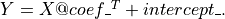
cca = CCA(n_components=1)
cca.fit(pheno, mpheno_geno['Genotype'])
# print(cca.coef_.shape)
# print(np.array(cca.coef_[0, 1:])/cca.coef_[0, 1]) # The coefficients of the
# linear model such that Y is approximated as Y = X @ coef_.T + intercept_.
coef_cca = pd.DataFrame({
'normalized loadings': list(np.array(cca.coef_[0, 1:]) / cca.coef_[0, 1])
})
coef_cca.index = [f'X{i}' for i in range(1, n_traits + 1)]
coef_cca.index.name = 'Trait'
print(coef_cca)
normalized loadings
Trait
X1 1.000000
X2 0.261538
X3 0.205857
X4 0.389940
X5 -0.013335
X6 -0.075922
General study¶
# dimensions of the simulated data
m = 13000 # sample size
n_traits = 8 # number of dimensions
trait_names = [f'X{i}' for i in range(1, n_traits + 1)]
# Number of subjects (different sub-population) in each trait
dic_m = {"m1": 4000,
"m2": 500,
"m3": 500,
"m4": 50,
"m5": 50,
"m6": 2000,
"m7": 2900,
"m8": 3000} # m8 = m -m1 -m2 -m3 -m4 -m5 -m6 -m7
Generate the n_traits sparse phenotypes
study_X = generate_traits(np.array(list(dic_m.values())))
study_corr = np.corrcoef(study_X, rowvar=False)
Generate the associated genotypes (one per sub-population)
study_genotype = np.concatenate([
np.linspace(0, 2, dic_m["m1"]), np.linspace(0, 2, dic_m["m2"]),
np.linspace(0, 2, dic_m["m3"]), np.linspace(0, 2, dic_m["m4"]),
np.linspace(0, 2, dic_m["m5"]), np.linspace(0, 2, dic_m["m6"]),
np.linspace(0, 2, dic_m["m7"]), np.linspace(0, 2, dic_m["m8"])
])
study_genotype = study_genotype.round()
list_noise = np.linspace(4, 5, 2)
list_most_pval = []
list_multi_pval = []
dic_univ_betas = {}
dic_multiv_betas = {}
dic_cca_betas = {}
dic_fake_h2 = {}
for noise_level in list_noise:
fake_h2 = []
for i in range(n_traits):
rand_noise = 2 * np.random.rand()
study_X[:, i] += np.random.randn(m) * (noise_level + rand_noise)
fake_h2.append(
dic_m[f"m{i + 1}"] / np.array(
list(dic_m.values())
).sum() * (noise_level + rand_noise)**2
)
dic_fake_h2[noise_level] = fake_h2
mpheno_geno = pd.DataFrame(
study_X,
columns=[f'X{i}' for i in range(1, n_traits + 1)]
)
mpheno_geno['Genotype'] = study_genotype
list_mahalanobis_norm_perm = mahalanobis_norm_perm(
mpheno_geno, study_corr, nb_perm_geno=5000
)
univariates_gwases, list_betas_orig, list_z_score_orig = UniVar_reg(
mpheno_geno, trait_names
)
z_score_observed = univariates_gwases['t-value'].values
dic_univ_betas[noise_level] = (
np.array(z_score_observed) / z_score_observed[0]
)
alpha, loc, scale = fit_gamma(list_mahalanobis_norm_perm, plot_fit=False)
most_pval = MOSTest(z_score_observed, study_corr, alpha, loc, scale)
list_most_pval.append(most_pval)
pheno = sm.add_constant(
mpheno_geno[[f'X{i}' for i in range(1, n_traits + 1)]]
)
model = sm.OLS(mpheno_geno['Genotype'], pheno)
results = model.fit()
multi_pval = results.f_pvalue
dic_multiv_betas[noise_level] = np.array(
results.params[[f'X{i}' for i in range(1, n_traits + 1)]].to_list()
) / results.params['X1']
list_multi_pval.append(multi_pval)
cca = CCA(n_components=1)
cca.fit(pheno, mpheno_geno['Genotype'])
dic_cca_betas[noise_level] = np.array(cca.coef_[0, 1:]) / cca.coef_[0, 1]
Permutation: 0%| | 0/5000 [00:00<?, ?it/s]
Permutation: 0%| | 10/5000 [00:00<00:52, 94.62it/s]
Permutation: 0%| | 21/5000 [00:00<00:50, 98.50it/s]
Permutation: 1%| | 32/5000 [00:00<00:49, 100.50it/s]
Permutation: 1%| | 43/5000 [00:00<00:49, 100.85it/s]
Permutation: 1%| | 54/5000 [00:00<00:48, 101.15it/s]
Permutation: 1%|▏ | 65/5000 [00:00<00:48, 101.36it/s]
Permutation: 2%|▏ | 76/5000 [00:00<00:48, 101.62it/s]
Permutation: 2%|▏ | 87/5000 [00:00<00:48, 101.92it/s]
Permutation: 2%|▏ | 98/5000 [00:00<00:47, 102.13it/s]
Permutation: 2%|▏ | 109/5000 [00:01<00:47, 102.46it/s]
Permutation: 2%|▏ | 120/5000 [00:01<00:47, 102.49it/s]
Permutation: 3%|▎ | 131/5000 [00:01<00:47, 102.26it/s]
Permutation: 3%|▎ | 142/5000 [00:01<00:47, 102.45it/s]
Permutation: 3%|▎ | 153/5000 [00:01<00:47, 102.64it/s]
Permutation: 3%|▎ | 164/5000 [00:01<00:47, 102.65it/s]
Permutation: 4%|▎ | 175/5000 [00:01<00:46, 102.75it/s]
Permutation: 4%|▎ | 186/5000 [00:01<00:47, 101.97it/s]
Permutation: 4%|▍ | 197/5000 [00:01<00:47, 102.10it/s]
Permutation: 4%|▍ | 208/5000 [00:02<00:46, 102.07it/s]
Permutation: 4%|▍ | 219/5000 [00:02<00:46, 102.04it/s]
Permutation: 5%|▍ | 230/5000 [00:02<00:46, 102.08it/s]
Permutation: 5%|▍ | 241/5000 [00:02<00:46, 102.32it/s]
Permutation: 5%|▌ | 252/5000 [00:02<00:46, 101.45it/s]
Permutation: 5%|▌ | 263/5000 [00:02<00:46, 101.29it/s]
Permutation: 5%|▌ | 274/5000 [00:02<00:46, 101.66it/s]
Permutation: 6%|▌ | 285/5000 [00:02<00:46, 101.95it/s]
Permutation: 6%|▌ | 296/5000 [00:02<00:45, 102.39it/s]
Permutation: 6%|▌ | 307/5000 [00:03<00:45, 102.58it/s]
Permutation: 6%|▋ | 318/5000 [00:03<00:45, 102.85it/s]
Permutation: 7%|▋ | 329/5000 [00:03<00:45, 102.71it/s]
Permutation: 7%|▋ | 340/5000 [00:03<00:45, 102.71it/s]
Permutation: 7%|▋ | 351/5000 [00:03<00:45, 102.67it/s]
Permutation: 7%|▋ | 362/5000 [00:03<00:45, 102.17it/s]
Permutation: 7%|▋ | 373/5000 [00:03<00:45, 102.08it/s]
Permutation: 8%|▊ | 384/5000 [00:03<00:45, 102.32it/s]
Permutation: 8%|▊ | 395/5000 [00:03<00:44, 102.62it/s]
Permutation: 8%|▊ | 406/5000 [00:03<00:44, 102.35it/s]
Permutation: 8%|▊ | 417/5000 [00:04<00:44, 102.45it/s]
Permutation: 9%|▊ | 428/5000 [00:04<00:44, 102.61it/s]
Permutation: 9%|▉ | 439/5000 [00:04<00:44, 102.38it/s]
Permutation: 9%|▉ | 450/5000 [00:04<00:44, 102.56it/s]
Permutation: 9%|▉ | 461/5000 [00:04<00:44, 102.29it/s]
Permutation: 9%|▉ | 472/5000 [00:04<00:44, 102.07it/s]
Permutation: 10%|▉ | 483/5000 [00:04<00:44, 101.99it/s]
Permutation: 10%|▉ | 494/5000 [00:04<00:44, 101.95it/s]
Permutation: 10%|█ | 505/5000 [00:04<00:44, 102.01it/s]
Permutation: 10%|█ | 516/5000 [00:05<00:44, 101.12it/s]
Permutation: 11%|█ | 527/5000 [00:05<00:44, 101.05it/s]
Permutation: 11%|█ | 538/5000 [00:05<00:44, 100.59it/s]
Permutation: 11%|█ | 549/5000 [00:05<00:44, 100.55it/s]
Permutation: 11%|█ | 560/5000 [00:05<00:44, 100.35it/s]
Permutation: 11%|█▏ | 571/5000 [00:05<00:44, 99.90it/s]
Permutation: 12%|█▏ | 582/5000 [00:05<00:44, 100.16it/s]
Permutation: 12%|█▏ | 593/5000 [00:05<00:43, 100.67it/s]
Permutation: 12%|█▏ | 604/5000 [00:05<00:43, 101.36it/s]
Permutation: 12%|█▏ | 615/5000 [00:06<00:43, 101.43it/s]
Permutation: 13%|█▎ | 626/5000 [00:06<00:42, 101.73it/s]
Permutation: 13%|█▎ | 637/5000 [00:06<00:42, 101.56it/s]
Permutation: 13%|█▎ | 648/5000 [00:06<00:42, 101.72it/s]
Permutation: 13%|█▎ | 659/5000 [00:06<00:42, 101.39it/s]
Permutation: 13%|█▎ | 670/5000 [00:06<00:42, 101.42it/s]
Permutation: 14%|█▎ | 681/5000 [00:06<00:42, 101.57it/s]
Permutation: 14%|█▍ | 692/5000 [00:06<00:42, 101.19it/s]
Permutation: 14%|█▍ | 703/5000 [00:06<00:42, 101.28it/s]
Permutation: 14%|█▍ | 714/5000 [00:07<00:42, 101.37it/s]
Permutation: 14%|█▍ | 725/5000 [00:07<00:42, 100.79it/s]
Permutation: 15%|█▍ | 736/5000 [00:07<00:42, 101.17it/s]
Permutation: 15%|█▍ | 747/5000 [00:07<00:42, 101.11it/s]
Permutation: 15%|█▌ | 758/5000 [00:07<00:41, 101.44it/s]
Permutation: 15%|█▌ | 769/5000 [00:07<00:41, 101.04it/s]
Permutation: 16%|█▌ | 780/5000 [00:07<00:41, 100.53it/s]
Permutation: 16%|█▌ | 791/5000 [00:07<00:42, 100.19it/s]
Permutation: 16%|█▌ | 802/5000 [00:07<00:41, 100.21it/s]
Permutation: 16%|█▋ | 813/5000 [00:08<00:41, 100.44it/s]
Permutation: 16%|█▋ | 824/5000 [00:08<00:41, 100.59it/s]
Permutation: 17%|█▋ | 835/5000 [00:08<00:41, 101.10it/s]
Permutation: 17%|█▋ | 846/5000 [00:08<00:41, 101.00it/s]
Permutation: 17%|█▋ | 857/5000 [00:08<00:40, 101.11it/s]
Permutation: 17%|█▋ | 868/5000 [00:08<00:40, 101.32it/s]
Permutation: 18%|█▊ | 879/5000 [00:08<00:40, 100.94it/s]
Permutation: 18%|█▊ | 890/5000 [00:08<00:40, 100.59it/s]
Permutation: 18%|█▊ | 901/5000 [00:08<00:40, 100.71it/s]
Permutation: 18%|█▊ | 912/5000 [00:08<00:40, 100.83it/s]
Permutation: 18%|█▊ | 923/5000 [00:09<00:40, 100.96it/s]
Permutation: 19%|█▊ | 934/5000 [00:09<00:40, 101.03it/s]
Permutation: 19%|█▉ | 945/5000 [00:09<00:40, 100.89it/s]
Permutation: 19%|█▉ | 956/5000 [00:09<00:39, 101.39it/s]
Permutation: 19%|█▉ | 967/5000 [00:09<00:39, 101.38it/s]
Permutation: 20%|█▉ | 978/5000 [00:09<00:39, 101.35it/s]
Permutation: 20%|█▉ | 989/5000 [00:09<00:39, 101.51it/s]
Permutation: 20%|██ | 1000/5000 [00:09<00:39, 101.38it/s]
Permutation: 20%|██ | 1011/5000 [00:09<00:39, 101.44it/s]
Permutation: 20%|██ | 1022/5000 [00:10<00:39, 101.45it/s]
Permutation: 21%|██ | 1033/5000 [00:10<00:39, 101.68it/s]
Permutation: 21%|██ | 1044/5000 [00:10<00:39, 100.90it/s]
Permutation: 21%|██ | 1055/5000 [00:10<00:38, 101.42it/s]
Permutation: 21%|██▏ | 1066/5000 [00:10<00:38, 101.46it/s]
Permutation: 22%|██▏ | 1077/5000 [00:10<00:38, 101.64it/s]
Permutation: 22%|██▏ | 1088/5000 [00:10<00:38, 101.84it/s]
Permutation: 22%|██▏ | 1099/5000 [00:10<00:38, 101.81it/s]
Permutation: 22%|██▏ | 1110/5000 [00:10<00:38, 101.95it/s]
Permutation: 22%|██▏ | 1121/5000 [00:11<00:37, 102.27it/s]
Permutation: 23%|██▎ | 1132/5000 [00:11<00:37, 102.44it/s]
Permutation: 23%|██▎ | 1143/5000 [00:11<00:37, 102.29it/s]
Permutation: 23%|██▎ | 1154/5000 [00:11<00:37, 102.19it/s]
Permutation: 23%|██▎ | 1165/5000 [00:11<00:37, 102.37it/s]
Permutation: 24%|██▎ | 1176/5000 [00:11<00:37, 102.35it/s]
Permutation: 24%|██▎ | 1187/5000 [00:11<00:37, 101.60it/s]
Permutation: 24%|██▍ | 1198/5000 [00:11<00:37, 101.95it/s]
Permutation: 24%|██▍ | 1209/5000 [00:11<00:37, 102.31it/s]
Permutation: 24%|██▍ | 1220/5000 [00:12<00:36, 102.41it/s]
Permutation: 25%|██▍ | 1231/5000 [00:12<00:36, 102.37it/s]
Permutation: 25%|██▍ | 1242/5000 [00:12<00:36, 102.40it/s]
Permutation: 25%|██▌ | 1253/5000 [00:12<00:36, 102.51it/s]
Permutation: 25%|██▌ | 1264/5000 [00:12<00:36, 102.73it/s]
Permutation: 26%|██▌ | 1275/5000 [00:12<00:36, 102.86it/s]
Permutation: 26%|██▌ | 1286/5000 [00:12<00:36, 102.25it/s]
Permutation: 26%|██▌ | 1297/5000 [00:12<00:36, 101.71it/s]
Permutation: 26%|██▌ | 1308/5000 [00:12<00:36, 101.27it/s]
Permutation: 26%|██▋ | 1319/5000 [00:12<00:36, 101.38it/s]
Permutation: 27%|██▋ | 1330/5000 [00:13<00:36, 101.61it/s]
Permutation: 27%|██▋ | 1341/5000 [00:13<00:36, 101.49it/s]
Permutation: 27%|██▋ | 1352/5000 [00:13<00:36, 101.17it/s]
Permutation: 27%|██▋ | 1363/5000 [00:13<00:35, 101.39it/s]
Permutation: 27%|██▋ | 1374/5000 [00:13<00:35, 101.47it/s]
Permutation: 28%|██▊ | 1385/5000 [00:13<00:35, 101.22it/s]
Permutation: 28%|██▊ | 1396/5000 [00:13<00:35, 100.96it/s]
Permutation: 28%|██▊ | 1407/5000 [00:13<00:35, 100.95it/s]
Permutation: 28%|██▊ | 1418/5000 [00:13<00:35, 101.07it/s]
Permutation: 29%|██▊ | 1429/5000 [00:14<00:35, 101.25it/s]
Permutation: 29%|██▉ | 1440/5000 [00:14<00:35, 101.41it/s]
Permutation: 29%|██▉ | 1451/5000 [00:14<00:35, 100.99it/s]
Permutation: 29%|██▉ | 1462/5000 [00:14<00:34, 101.52it/s]
Permutation: 29%|██▉ | 1473/5000 [00:14<00:34, 101.80it/s]
Permutation: 30%|██▉ | 1484/5000 [00:14<00:34, 102.00it/s]
Permutation: 30%|██▉ | 1495/5000 [00:14<00:34, 102.12it/s]
Permutation: 30%|███ | 1506/5000 [00:14<00:34, 102.16it/s]
Permutation: 30%|███ | 1517/5000 [00:14<00:34, 102.37it/s]
Permutation: 31%|███ | 1528/5000 [00:15<00:33, 102.57it/s]
Permutation: 31%|███ | 1539/5000 [00:15<00:33, 102.23it/s]
Permutation: 31%|███ | 1550/5000 [00:15<00:33, 102.35it/s]
Permutation: 31%|███ | 1561/5000 [00:15<00:33, 102.36it/s]
Permutation: 31%|███▏ | 1572/5000 [00:15<00:33, 102.31it/s]
Permutation: 32%|███▏ | 1583/5000 [00:15<00:33, 102.09it/s]
Permutation: 32%|███▏ | 1594/5000 [00:15<00:33, 102.09it/s]
Permutation: 32%|███▏ | 1605/5000 [00:15<00:33, 102.04it/s]
Permutation: 32%|███▏ | 1616/5000 [00:15<00:33, 102.05it/s]
Permutation: 33%|███▎ | 1627/5000 [00:16<00:33, 101.94it/s]
Permutation: 33%|███▎ | 1638/5000 [00:16<00:33, 101.60it/s]
Permutation: 33%|███▎ | 1649/5000 [00:16<00:32, 101.80it/s]
Permutation: 33%|███▎ | 1660/5000 [00:16<00:32, 102.07it/s]
Permutation: 33%|███▎ | 1671/5000 [00:16<00:32, 102.11it/s]
Permutation: 34%|███▎ | 1682/5000 [00:16<00:32, 102.23it/s]
Permutation: 34%|███▍ | 1693/5000 [00:16<00:32, 102.27it/s]
Permutation: 34%|███▍ | 1704/5000 [00:16<00:32, 101.94it/s]
Permutation: 34%|███▍ | 1715/5000 [00:16<00:32, 102.01it/s]
Permutation: 35%|███▍ | 1726/5000 [00:16<00:32, 102.15it/s]
Permutation: 35%|███▍ | 1737/5000 [00:17<00:31, 102.19it/s]
Permutation: 35%|███▍ | 1748/5000 [00:17<00:32, 101.38it/s]
Permutation: 35%|███▌ | 1759/5000 [00:17<00:31, 101.43it/s]
Permutation: 35%|███▌ | 1770/5000 [00:17<00:31, 101.21it/s]
Permutation: 36%|███▌ | 1781/5000 [00:17<00:31, 101.59it/s]
Permutation: 36%|███▌ | 1792/5000 [00:17<00:31, 100.68it/s]
Permutation: 36%|███▌ | 1803/5000 [00:17<00:31, 100.85it/s]
Permutation: 36%|███▋ | 1814/5000 [00:17<00:31, 100.92it/s]
Permutation: 36%|███▋ | 1825/5000 [00:17<00:31, 100.94it/s]
Permutation: 37%|███▋ | 1836/5000 [00:18<00:31, 101.08it/s]
Permutation: 37%|███▋ | 1847/5000 [00:18<00:31, 101.31it/s]
Permutation: 37%|███▋ | 1858/5000 [00:18<00:30, 101.43it/s]
Permutation: 37%|███▋ | 1869/5000 [00:18<00:30, 101.69it/s]
Permutation: 38%|███▊ | 1880/5000 [00:18<00:30, 101.71it/s]
Permutation: 38%|███▊ | 1891/5000 [00:18<00:30, 101.49it/s]
Permutation: 38%|███▊ | 1902/5000 [00:18<00:30, 101.71it/s]
Permutation: 38%|███▊ | 1913/5000 [00:18<00:30, 101.04it/s]
Permutation: 38%|███▊ | 1924/5000 [00:18<00:30, 101.62it/s]
Permutation: 39%|███▊ | 1935/5000 [00:19<00:31, 96.88it/s]
Permutation: 39%|███▉ | 1946/5000 [00:19<00:30, 98.59it/s]
Permutation: 39%|███▉ | 1957/5000 [00:19<00:30, 99.63it/s]
Permutation: 39%|███▉ | 1968/5000 [00:19<00:30, 100.45it/s]
Permutation: 40%|███▉ | 1979/5000 [00:19<00:29, 101.06it/s]
Permutation: 40%|███▉ | 1990/5000 [00:19<00:29, 101.39it/s]
Permutation: 40%|████ | 2001/5000 [00:19<00:29, 101.87it/s]
Permutation: 40%|████ | 2012/5000 [00:19<00:29, 101.56it/s]
Permutation: 40%|████ | 2023/5000 [00:19<00:29, 100.93it/s]
Permutation: 41%|████ | 2034/5000 [00:20<00:29, 101.05it/s]
Permutation: 41%|████ | 2045/5000 [00:20<00:29, 101.15it/s]
Permutation: 41%|████ | 2056/5000 [00:20<00:29, 101.13it/s]
Permutation: 41%|████▏ | 2067/5000 [00:20<00:28, 101.37it/s]
Permutation: 42%|████▏ | 2078/5000 [00:20<00:28, 101.50it/s]
Permutation: 42%|████▏ | 2089/5000 [00:20<00:28, 101.63it/s]
Permutation: 42%|████▏ | 2100/5000 [00:20<00:28, 101.80it/s]
Permutation: 42%|████▏ | 2111/5000 [00:20<00:28, 101.97it/s]
Permutation: 42%|████▏ | 2122/5000 [00:20<00:28, 102.09it/s]
Permutation: 43%|████▎ | 2133/5000 [00:20<00:28, 102.37it/s]
Permutation: 43%|████▎ | 2144/5000 [00:21<00:27, 102.35it/s]
Permutation: 43%|████▎ | 2155/5000 [00:21<00:27, 101.87it/s]
Permutation: 43%|████▎ | 2166/5000 [00:21<00:27, 101.87it/s]
Permutation: 44%|████▎ | 2177/5000 [00:21<00:27, 102.06it/s]
Permutation: 44%|████▍ | 2188/5000 [00:21<00:27, 101.99it/s]
Permutation: 44%|████▍ | 2199/5000 [00:21<00:27, 101.85it/s]
Permutation: 44%|████▍ | 2210/5000 [00:21<00:27, 101.95it/s]
Permutation: 44%|████▍ | 2221/5000 [00:21<00:27, 101.66it/s]
Permutation: 45%|████▍ | 2232/5000 [00:21<00:27, 101.74it/s]
Permutation: 45%|████▍ | 2243/5000 [00:22<00:27, 101.69it/s]
Permutation: 45%|████▌ | 2254/5000 [00:22<00:27, 101.54it/s]
Permutation: 45%|████▌ | 2265/5000 [00:22<00:26, 101.45it/s]
Permutation: 46%|████▌ | 2276/5000 [00:22<00:26, 101.34it/s]
Permutation: 46%|████▌ | 2287/5000 [00:22<00:26, 101.02it/s]
Permutation: 46%|████▌ | 2298/5000 [00:22<00:26, 101.05it/s]
Permutation: 46%|████▌ | 2309/5000 [00:22<00:26, 100.74it/s]
Permutation: 46%|████▋ | 2320/5000 [00:22<00:26, 100.71it/s]
Permutation: 47%|████▋ | 2331/5000 [00:22<00:26, 101.13it/s]
Permutation: 47%|████▋ | 2342/5000 [00:23<00:26, 101.67it/s]
Permutation: 47%|████▋ | 2353/5000 [00:23<00:25, 101.93it/s]
Permutation: 47%|████▋ | 2364/5000 [00:23<00:25, 101.97it/s]
Permutation: 48%|████▊ | 2375/5000 [00:23<00:25, 102.25it/s]
Permutation: 48%|████▊ | 2386/5000 [00:23<00:25, 102.35it/s]
Permutation: 48%|████▊ | 2397/5000 [00:23<00:25, 102.56it/s]
Permutation: 48%|████▊ | 2408/5000 [00:23<00:25, 101.81it/s]
Permutation: 48%|████▊ | 2419/5000 [00:23<00:25, 101.61it/s]
Permutation: 49%|████▊ | 2430/5000 [00:23<00:25, 101.64it/s]
Permutation: 49%|████▉ | 2441/5000 [00:24<00:25, 101.97it/s]
Permutation: 49%|████▉ | 2452/5000 [00:24<00:24, 102.29it/s]
Permutation: 49%|████▉ | 2463/5000 [00:24<00:24, 102.40it/s]
Permutation: 49%|████▉ | 2474/5000 [00:24<00:24, 102.65it/s]
Permutation: 50%|████▉ | 2485/5000 [00:24<00:24, 102.57it/s]
Permutation: 50%|████▉ | 2496/5000 [00:24<00:24, 102.58it/s]
Permutation: 50%|█████ | 2507/5000 [00:24<00:24, 102.66it/s]
Permutation: 50%|█████ | 2518/5000 [00:24<00:24, 102.55it/s]
Permutation: 51%|█████ | 2529/5000 [00:24<00:24, 102.82it/s]
Permutation: 51%|█████ | 2540/5000 [00:24<00:23, 102.63it/s]
Permutation: 51%|█████ | 2551/5000 [00:25<00:23, 102.83it/s]
Permutation: 51%|█████ | 2562/5000 [00:25<00:23, 102.81it/s]
Permutation: 51%|█████▏ | 2573/5000 [00:25<00:23, 102.29it/s]
Permutation: 52%|█████▏ | 2584/5000 [00:25<00:23, 102.24it/s]
Permutation: 52%|█████▏ | 2595/5000 [00:25<00:23, 102.05it/s]
Permutation: 52%|█████▏ | 2606/5000 [00:25<00:23, 102.07it/s]
Permutation: 52%|█████▏ | 2617/5000 [00:25<00:23, 102.07it/s]
Permutation: 53%|█████▎ | 2628/5000 [00:25<00:23, 102.27it/s]
Permutation: 53%|█████▎ | 2639/5000 [00:25<00:23, 102.60it/s]
Permutation: 53%|█████▎ | 2650/5000 [00:26<00:22, 102.71it/s]
Permutation: 53%|█████▎ | 2661/5000 [00:26<00:22, 102.82it/s]
Permutation: 53%|█████▎ | 2672/5000 [00:26<00:22, 102.56it/s]
Permutation: 54%|█████▎ | 2683/5000 [00:26<00:22, 102.87it/s]
Permutation: 54%|█████▍ | 2694/5000 [00:26<00:22, 102.66it/s]
Permutation: 54%|█████▍ | 2705/5000 [00:26<00:22, 102.67it/s]
Permutation: 54%|█████▍ | 2716/5000 [00:26<00:22, 102.48it/s]
Permutation: 55%|█████▍ | 2727/5000 [00:26<00:22, 101.79it/s]
Permutation: 55%|█████▍ | 2738/5000 [00:26<00:22, 102.00it/s]
Permutation: 55%|█████▍ | 2749/5000 [00:27<00:22, 101.95it/s]
Permutation: 55%|█████▌ | 2760/5000 [00:27<00:22, 101.51it/s]
Permutation: 55%|█████▌ | 2771/5000 [00:27<00:22, 101.31it/s]
Permutation: 56%|█████▌ | 2782/5000 [00:27<00:21, 101.77it/s]
Permutation: 56%|█████▌ | 2793/5000 [00:27<00:21, 102.17it/s]
Permutation: 56%|█████▌ | 2804/5000 [00:27<00:21, 102.63it/s]
Permutation: 56%|█████▋ | 2815/5000 [00:27<00:21, 102.92it/s]
Permutation: 57%|█████▋ | 2826/5000 [00:27<00:21, 102.88it/s]
Permutation: 57%|█████▋ | 2837/5000 [00:27<00:21, 102.89it/s]
Permutation: 57%|█████▋ | 2848/5000 [00:28<00:21, 102.38it/s]
Permutation: 57%|█████▋ | 2859/5000 [00:28<00:20, 102.42it/s]
Permutation: 57%|█████▋ | 2870/5000 [00:28<00:21, 100.31it/s]
Permutation: 58%|█████▊ | 2881/5000 [00:28<00:21, 100.59it/s]
Permutation: 58%|█████▊ | 2892/5000 [00:28<00:20, 100.86it/s]
Permutation: 58%|█████▊ | 2903/5000 [00:28<00:20, 100.89it/s]
Permutation: 58%|█████▊ | 2914/5000 [00:28<00:20, 101.24it/s]
Permutation: 58%|█████▊ | 2925/5000 [00:28<00:20, 101.41it/s]
Permutation: 59%|█████▊ | 2936/5000 [00:28<00:20, 100.75it/s]
Permutation: 59%|█████▉ | 2947/5000 [00:28<00:20, 100.39it/s]
Permutation: 59%|█████▉ | 2958/5000 [00:29<00:20, 100.11it/s]
Permutation: 59%|█████▉ | 2969/5000 [00:29<00:22, 89.96it/s]
Permutation: 60%|█████▉ | 2979/5000 [00:29<00:21, 92.18it/s]
Permutation: 60%|█████▉ | 2990/5000 [00:29<00:21, 94.55it/s]
Permutation: 60%|██████ | 3001/5000 [00:29<00:20, 96.70it/s]
Permutation: 60%|██████ | 3011/5000 [00:29<00:20, 97.22it/s]
Permutation: 60%|██████ | 3022/5000 [00:29<00:20, 98.29it/s]
Permutation: 61%|██████ | 3033/5000 [00:29<00:19, 99.17it/s]
Permutation: 61%|██████ | 3044/5000 [00:29<00:19, 99.92it/s]
Permutation: 61%|██████ | 3055/5000 [00:30<00:19, 100.49it/s]
Permutation: 61%|██████▏ | 3066/5000 [00:30<00:19, 101.09it/s]
Permutation: 62%|██████▏ | 3077/5000 [00:30<00:19, 101.06it/s]
Permutation: 62%|██████▏ | 3088/5000 [00:30<00:18, 101.31it/s]
Permutation: 62%|██████▏ | 3099/5000 [00:30<00:18, 101.43it/s]
Permutation: 62%|██████▏ | 3110/5000 [00:30<00:18, 101.50it/s]
Permutation: 62%|██████▏ | 3121/5000 [00:30<00:18, 101.33it/s]
Permutation: 63%|██████▎ | 3132/5000 [00:30<00:18, 101.54it/s]
Permutation: 63%|██████▎ | 3143/5000 [00:30<00:18, 101.48it/s]
Permutation: 63%|██████▎ | 3154/5000 [00:31<00:18, 101.61it/s]
Permutation: 63%|██████▎ | 3165/5000 [00:31<00:18, 101.78it/s]
Permutation: 64%|██████▎ | 3176/5000 [00:31<00:17, 101.54it/s]
Permutation: 64%|██████▎ | 3187/5000 [00:31<00:17, 101.80it/s]
Permutation: 64%|██████▍ | 3198/5000 [00:31<00:17, 101.98it/s]
Permutation: 64%|██████▍ | 3209/5000 [00:31<00:17, 102.22it/s]
Permutation: 64%|██████▍ | 3220/5000 [00:31<00:17, 102.21it/s]
Permutation: 65%|██████▍ | 3231/5000 [00:31<00:17, 102.20it/s]
Permutation: 65%|██████▍ | 3242/5000 [00:31<00:17, 102.18it/s]
Permutation: 65%|██████▌ | 3253/5000 [00:32<00:17, 102.14it/s]
Permutation: 65%|██████▌ | 3264/5000 [00:32<00:17, 101.94it/s]
Permutation: 66%|██████▌ | 3275/5000 [00:32<00:16, 101.53it/s]
Permutation: 66%|██████▌ | 3286/5000 [00:32<00:16, 101.20it/s]
Permutation: 66%|██████▌ | 3297/5000 [00:32<00:16, 101.43it/s]
Permutation: 66%|██████▌ | 3308/5000 [00:32<00:16, 101.74it/s]
Permutation: 66%|██████▋ | 3319/5000 [00:32<00:16, 101.71it/s]
Permutation: 67%|██████▋ | 3330/5000 [00:32<00:16, 101.65it/s]
Permutation: 67%|██████▋ | 3341/5000 [00:32<00:16, 101.77it/s]
Permutation: 67%|██████▋ | 3352/5000 [00:33<00:16, 101.81it/s]
Permutation: 67%|██████▋ | 3363/5000 [00:33<00:16, 102.01it/s]
Permutation: 67%|██████▋ | 3374/5000 [00:33<00:15, 101.96it/s]
Permutation: 68%|██████▊ | 3385/5000 [00:33<00:15, 101.87it/s]
Permutation: 68%|██████▊ | 3396/5000 [00:33<00:15, 101.94it/s]
Permutation: 68%|██████▊ | 3407/5000 [00:33<00:15, 102.14it/s]
Permutation: 68%|██████▊ | 3418/5000 [00:33<00:15, 102.42it/s]
Permutation: 69%|██████▊ | 3429/5000 [00:33<00:15, 102.55it/s]
Permutation: 69%|██████▉ | 3440/5000 [00:33<00:15, 102.16it/s]
Permutation: 69%|██████▉ | 3451/5000 [00:33<00:15, 102.00it/s]
Permutation: 69%|██████▉ | 3462/5000 [00:34<00:15, 102.18it/s]
Permutation: 69%|██████▉ | 3473/5000 [00:34<00:14, 102.37it/s]
Permutation: 70%|██████▉ | 3484/5000 [00:34<00:14, 102.26it/s]
Permutation: 70%|██████▉ | 3495/5000 [00:34<00:14, 101.94it/s]
Permutation: 70%|███████ | 3506/5000 [00:34<00:14, 101.58it/s]
Permutation: 70%|███████ | 3517/5000 [00:34<00:14, 101.93it/s]
Permutation: 71%|███████ | 3528/5000 [00:34<00:14, 102.23it/s]
Permutation: 71%|███████ | 3539/5000 [00:34<00:14, 102.28it/s]
Permutation: 71%|███████ | 3550/5000 [00:34<00:14, 102.12it/s]
Permutation: 71%|███████ | 3561/5000 [00:35<00:14, 102.11it/s]
Permutation: 71%|███████▏ | 3572/5000 [00:35<00:14, 100.66it/s]
Permutation: 72%|███████▏ | 3583/5000 [00:35<00:14, 101.04it/s]
Permutation: 72%|███████▏ | 3594/5000 [00:35<00:13, 101.18it/s]
Permutation: 72%|███████▏ | 3605/5000 [00:35<00:13, 101.35it/s]
Permutation: 72%|███████▏ | 3616/5000 [00:35<00:13, 101.47it/s]
Permutation: 73%|███████▎ | 3627/5000 [00:35<00:13, 101.37it/s]
Permutation: 73%|███████▎ | 3638/5000 [00:35<00:13, 101.76it/s]
Permutation: 73%|███████▎ | 3649/5000 [00:35<00:13, 102.05it/s]
Permutation: 73%|███████▎ | 3660/5000 [00:36<00:13, 102.26it/s]
Permutation: 73%|███████▎ | 3671/5000 [00:36<00:12, 102.46it/s]
Permutation: 74%|███████▎ | 3682/5000 [00:36<00:12, 102.46it/s]
Permutation: 74%|███████▍ | 3693/5000 [00:36<00:12, 102.73it/s]
Permutation: 74%|███████▍ | 3704/5000 [00:36<00:12, 102.01it/s]
Permutation: 74%|███████▍ | 3715/5000 [00:36<00:12, 102.00it/s]
Permutation: 75%|███████▍ | 3726/5000 [00:36<00:12, 102.33it/s]
Permutation: 75%|███████▍ | 3737/5000 [00:36<00:12, 102.53it/s]
Permutation: 75%|███████▍ | 3748/5000 [00:36<00:12, 102.73it/s]
Permutation: 75%|███████▌ | 3759/5000 [00:37<00:12, 102.80it/s]
Permutation: 75%|███████▌ | 3770/5000 [00:37<00:11, 102.92it/s]
Permutation: 76%|███████▌ | 3781/5000 [00:37<00:11, 102.36it/s]
Permutation: 76%|███████▌ | 3792/5000 [00:37<00:11, 102.34it/s]
Permutation: 76%|███████▌ | 3803/5000 [00:37<00:11, 102.48it/s]
Permutation: 76%|███████▋ | 3814/5000 [00:37<00:11, 102.43it/s]
Permutation: 76%|███████▋ | 3825/5000 [00:37<00:11, 102.75it/s]
Permutation: 77%|███████▋ | 3836/5000 [00:37<00:11, 102.81it/s]
Permutation: 77%|███████▋ | 3847/5000 [00:37<00:11, 102.79it/s]
Permutation: 77%|███████▋ | 3858/5000 [00:37<00:11, 102.45it/s]
Permutation: 77%|███████▋ | 3869/5000 [00:38<00:11, 102.38it/s]
Permutation: 78%|███████▊ | 3880/5000 [00:38<00:10, 102.52it/s]
Permutation: 78%|███████▊ | 3891/5000 [00:38<00:10, 102.45it/s]
Permutation: 78%|███████▊ | 3902/5000 [00:38<00:10, 102.47it/s]
Permutation: 78%|███████▊ | 3913/5000 [00:38<00:10, 101.97it/s]
Permutation: 78%|███████▊ | 3924/5000 [00:38<00:10, 102.22it/s]
Permutation: 79%|███████▊ | 3935/5000 [00:38<00:10, 102.42it/s]
Permutation: 79%|███████▉ | 3946/5000 [00:38<00:10, 102.23it/s]
Permutation: 79%|███████▉ | 3957/5000 [00:38<00:10, 102.45it/s]
Permutation: 79%|███████▉ | 3968/5000 [00:39<00:10, 102.18it/s]
Permutation: 80%|███████▉ | 3979/5000 [00:39<00:09, 102.44it/s]
Permutation: 80%|███████▉ | 3990/5000 [00:39<00:09, 102.35it/s]
Permutation: 80%|████████ | 4001/5000 [00:39<00:09, 102.58it/s]
Permutation: 80%|████████ | 4012/5000 [00:39<00:09, 102.67it/s]
Permutation: 80%|████████ | 4023/5000 [00:39<00:09, 102.76it/s]
Permutation: 81%|████████ | 4034/5000 [00:39<00:09, 102.81it/s]
Permutation: 81%|████████ | 4045/5000 [00:39<00:09, 102.65it/s]
Permutation: 81%|████████ | 4056/5000 [00:39<00:09, 102.78it/s]
Permutation: 81%|████████▏ | 4067/5000 [00:40<00:09, 102.84it/s]
Permutation: 82%|████████▏ | 4078/5000 [00:40<00:08, 102.86it/s]
Permutation: 82%|████████▏ | 4089/5000 [00:40<00:08, 102.79it/s]
Permutation: 82%|████████▏ | 4100/5000 [00:40<00:08, 102.70it/s]
Permutation: 82%|████████▏ | 4111/5000 [00:40<00:08, 102.66it/s]
Permutation: 82%|████████▏ | 4122/5000 [00:40<00:08, 102.56it/s]
Permutation: 83%|████████▎ | 4133/5000 [00:40<00:08, 102.46it/s]
Permutation: 83%|████████▎ | 4144/5000 [00:40<00:08, 102.84it/s]
Permutation: 83%|████████▎ | 4155/5000 [00:40<00:08, 102.64it/s]
Permutation: 83%|████████▎ | 4166/5000 [00:40<00:08, 102.55it/s]
Permutation: 84%|████████▎ | 4177/5000 [00:41<00:08, 102.19it/s]
Permutation: 84%|████████▍ | 4188/5000 [00:41<00:07, 102.17it/s]
Permutation: 84%|████████▍ | 4199/5000 [00:41<00:07, 101.96it/s]
Permutation: 84%|████████▍ | 4210/5000 [00:41<00:07, 102.21it/s]
Permutation: 84%|████████▍ | 4221/5000 [00:41<00:07, 102.43it/s]
Permutation: 85%|████████▍ | 4232/5000 [00:41<00:07, 102.40it/s]
Permutation: 85%|████████▍ | 4243/5000 [00:41<00:07, 102.09it/s]
Permutation: 85%|████████▌ | 4254/5000 [00:41<00:07, 102.35it/s]
Permutation: 85%|████████▌ | 4265/5000 [00:41<00:07, 102.49it/s]
Permutation: 86%|████████▌ | 4276/5000 [00:42<00:07, 102.56it/s]
Permutation: 86%|████████▌ | 4287/5000 [00:42<00:06, 102.42it/s]
Permutation: 86%|████████▌ | 4298/5000 [00:42<00:06, 102.30it/s]
Permutation: 86%|████████▌ | 4309/5000 [00:42<00:06, 102.40it/s]
Permutation: 86%|████████▋ | 4320/5000 [00:42<00:06, 102.24it/s]
Permutation: 87%|████████▋ | 4331/5000 [00:42<00:06, 102.41it/s]
Permutation: 87%|████████▋ | 4342/5000 [00:42<00:08, 80.49it/s]
Permutation: 87%|████████▋ | 4353/5000 [00:42<00:07, 85.76it/s]
Permutation: 87%|████████▋ | 4364/5000 [00:43<00:07, 90.09it/s]
Permutation: 88%|████████▊ | 4375/5000 [00:43<00:06, 93.17it/s]
Permutation: 88%|████████▊ | 4386/5000 [00:43<00:06, 95.28it/s]
Permutation: 88%|████████▊ | 4397/5000 [00:43<00:06, 96.92it/s]
Permutation: 88%|████████▊ | 4408/5000 [00:43<00:06, 98.13it/s]
Permutation: 88%|████████▊ | 4419/5000 [00:43<00:05, 99.02it/s]
Permutation: 89%|████████▊ | 4430/5000 [00:43<00:05, 99.86it/s]
Permutation: 89%|████████▉ | 4441/5000 [00:43<00:05, 100.46it/s]
Permutation: 89%|████████▉ | 4452/5000 [00:43<00:05, 100.82it/s]
Permutation: 89%|████████▉ | 4463/5000 [00:43<00:05, 101.36it/s]
Permutation: 89%|████████▉ | 4474/5000 [00:44<00:05, 101.09it/s]
Permutation: 90%|████████▉ | 4485/5000 [00:44<00:05, 100.94it/s]
Permutation: 90%|████████▉ | 4496/5000 [00:44<00:05, 100.79it/s]
Permutation: 90%|█████████ | 4507/5000 [00:44<00:04, 101.41it/s]
Permutation: 90%|█████████ | 4518/5000 [00:44<00:04, 101.48it/s]
Permutation: 91%|█████████ | 4529/5000 [00:44<00:04, 101.54it/s]
Permutation: 91%|█████████ | 4540/5000 [00:44<00:04, 101.43it/s]
Permutation: 91%|█████████ | 4551/5000 [00:44<00:04, 101.01it/s]
Permutation: 91%|█████████ | 4562/5000 [00:44<00:04, 100.69it/s]
Permutation: 91%|█████████▏| 4573/5000 [00:45<00:04, 100.41it/s]
Permutation: 92%|█████████▏| 4584/5000 [00:45<00:04, 100.01it/s]
Permutation: 92%|█████████▏| 4595/5000 [00:45<00:04, 99.28it/s]
Permutation: 92%|█████████▏| 4606/5000 [00:45<00:03, 99.56it/s]
Permutation: 92%|█████████▏| 4617/5000 [00:45<00:03, 99.83it/s]
Permutation: 93%|█████████▎| 4628/5000 [00:45<00:03, 100.17it/s]
Permutation: 93%|█████████▎| 4639/5000 [00:45<00:03, 100.57it/s]
Permutation: 93%|█████████▎| 4650/5000 [00:45<00:03, 100.54it/s]
Permutation: 93%|█████████▎| 4661/5000 [00:45<00:03, 100.53it/s]
Permutation: 93%|█████████▎| 4672/5000 [00:46<00:03, 100.13it/s]
Permutation: 94%|█████████▎| 4683/5000 [00:46<00:03, 99.86it/s]
Permutation: 94%|█████████▍| 4693/5000 [00:46<00:03, 99.38it/s]
Permutation: 94%|█████████▍| 4703/5000 [00:46<00:03, 98.77it/s]
Permutation: 94%|█████████▍| 4713/5000 [00:46<00:02, 98.72it/s]
Permutation: 94%|█████████▍| 4724/5000 [00:46<00:02, 99.22it/s]
Permutation: 95%|█████████▍| 4734/5000 [00:46<00:02, 99.34it/s]
Permutation: 95%|█████████▍| 4744/5000 [00:46<00:02, 99.30it/s]
Permutation: 95%|█████████▌| 4755/5000 [00:46<00:02, 99.60it/s]
Permutation: 95%|█████████▌| 4765/5000 [00:47<00:02, 99.63it/s]
Permutation: 96%|█████████▌| 4775/5000 [00:47<00:02, 99.42it/s]
Permutation: 96%|█████████▌| 4785/5000 [00:47<00:02, 98.73it/s]
Permutation: 96%|█████████▌| 4795/5000 [00:47<00:02, 98.89it/s]
Permutation: 96%|█████████▌| 4806/5000 [00:47<00:01, 99.69it/s]
Permutation: 96%|█████████▋| 4817/5000 [00:47<00:01, 99.97it/s]
Permutation: 97%|█████████▋| 4828/5000 [00:47<00:01, 100.35it/s]
Permutation: 97%|█████████▋| 4839/5000 [00:47<00:01, 100.23it/s]
Permutation: 97%|█████████▋| 4850/5000 [00:47<00:01, 100.36it/s]
Permutation: 97%|█████████▋| 4861/5000 [00:47<00:01, 100.79it/s]
Permutation: 97%|█████████▋| 4872/5000 [00:48<00:01, 101.13it/s]
Permutation: 98%|█████████▊| 4883/5000 [00:48<00:01, 101.30it/s]
Permutation: 98%|█████████▊| 4894/5000 [00:48<00:01, 101.42it/s]
Permutation: 98%|█████████▊| 4905/5000 [00:48<00:00, 101.65it/s]
Permutation: 98%|█████████▊| 4916/5000 [00:48<00:00, 101.54it/s]
Permutation: 99%|█████████▊| 4927/5000 [00:48<00:00, 101.06it/s]
Permutation: 99%|█████████▉| 4938/5000 [00:48<00:00, 101.55it/s]
Permutation: 99%|█████████▉| 4949/5000 [00:48<00:00, 101.66it/s]
Permutation: 99%|█████████▉| 4960/5000 [00:48<00:00, 101.69it/s]
Permutation: 99%|█████████▉| 4971/5000 [00:49<00:00, 101.96it/s]
Permutation: 100%|█████████▉| 4982/5000 [00:49<00:00, 101.77it/s]
Permutation: 100%|█████████▉| 4993/5000 [00:49<00:00, 101.91it/s]
Permutation: 100%|██████████| 5000/5000 [00:49<00:00, 101.36it/s]
Observed associations: [ 7.23 1.3 -0.17 -2.31 -0.08 1.83 3.04 5.17]
Mahalanobis norm on obseved associations: 98.68034197962791
MOSTEST p-value: 0.0
Permutation: 0%| | 0/5000 [00:00<?, ?it/s]
Permutation: 0%| | 4/5000 [00:00<02:07, 39.31it/s]
Permutation: 0%| | 15/5000 [00:00<01:05, 76.64it/s]
Permutation: 1%| | 26/5000 [00:00<00:56, 88.09it/s]
Permutation: 1%| | 37/5000 [00:00<00:53, 92.92it/s]
Permutation: 1%| | 48/5000 [00:00<00:51, 95.68it/s]
Permutation: 1%| | 59/5000 [00:00<00:50, 97.74it/s]
Permutation: 1%|▏ | 70/5000 [00:00<00:49, 99.09it/s]
Permutation: 2%|▏ | 81/5000 [00:00<00:49, 99.81it/s]
Permutation: 2%|▏ | 92/5000 [00:00<00:48, 100.58it/s]
Permutation: 2%|▏ | 103/5000 [00:01<00:48, 101.00it/s]
Permutation: 2%|▏ | 114/5000 [00:01<00:48, 101.35it/s]
Permutation: 2%|▎ | 125/5000 [00:01<00:47, 101.91it/s]
Permutation: 3%|▎ | 136/5000 [00:01<00:47, 101.74it/s]
Permutation: 3%|▎ | 147/5000 [00:01<00:47, 101.49it/s]
Permutation: 3%|▎ | 158/5000 [00:01<00:47, 101.52it/s]
Permutation: 3%|▎ | 169/5000 [00:01<00:47, 101.18it/s]
Permutation: 4%|▎ | 180/5000 [00:01<00:48, 99.10it/s]
Permutation: 4%|▍ | 191/5000 [00:01<00:48, 99.80it/s]
Permutation: 4%|▍ | 202/5000 [00:02<00:47, 100.46it/s]
Permutation: 4%|▍ | 213/5000 [00:02<00:47, 100.79it/s]
Permutation: 4%|▍ | 224/5000 [00:02<00:47, 101.00it/s]
Permutation: 5%|▍ | 235/5000 [00:02<00:47, 99.92it/s]
Permutation: 5%|▍ | 246/5000 [00:02<00:47, 100.60it/s]
Permutation: 5%|▌ | 257/5000 [00:02<00:46, 101.06it/s]
Permutation: 5%|▌ | 268/5000 [00:02<00:46, 101.37it/s]
Permutation: 6%|▌ | 279/5000 [00:02<00:46, 101.34it/s]
Permutation: 6%|▌ | 290/5000 [00:02<00:46, 101.28it/s]
Permutation: 6%|▌ | 301/5000 [00:03<00:46, 101.30it/s]
Permutation: 6%|▌ | 312/5000 [00:03<00:46, 100.91it/s]
Permutation: 6%|▋ | 323/5000 [00:03<00:46, 101.11it/s]
Permutation: 7%|▋ | 334/5000 [00:03<00:46, 101.18it/s]
Permutation: 7%|▋ | 345/5000 [00:03<00:45, 101.62it/s]
Permutation: 7%|▋ | 356/5000 [00:03<00:45, 101.59it/s]
Permutation: 7%|▋ | 367/5000 [00:03<00:45, 101.39it/s]
Permutation: 8%|▊ | 378/5000 [00:03<00:45, 101.37it/s]
Permutation: 8%|▊ | 389/5000 [00:03<00:45, 101.26it/s]
Permutation: 8%|▊ | 400/5000 [00:04<00:45, 101.56it/s]
Permutation: 8%|▊ | 411/5000 [00:04<00:45, 101.62it/s]
Permutation: 8%|▊ | 422/5000 [00:04<00:45, 101.03it/s]
Permutation: 9%|▊ | 433/5000 [00:04<00:45, 100.93it/s]
Permutation: 9%|▉ | 444/5000 [00:04<00:45, 101.09it/s]
Permutation: 9%|▉ | 455/5000 [00:04<00:44, 101.22it/s]
Permutation: 9%|▉ | 466/5000 [00:04<00:44, 101.63it/s]
Permutation: 10%|▉ | 477/5000 [00:04<00:44, 101.17it/s]
Permutation: 10%|▉ | 488/5000 [00:04<00:44, 100.86it/s]
Permutation: 10%|▉ | 499/5000 [00:05<00:45, 98.34it/s]
Permutation: 10%|█ | 509/5000 [00:05<00:48, 93.24it/s]
Permutation: 10%|█ | 519/5000 [00:05<00:47, 94.58it/s]
Permutation: 11%|█ | 529/5000 [00:05<00:46, 95.55it/s]
Permutation: 11%|█ | 539/5000 [00:05<00:46, 95.97it/s]
Permutation: 11%|█ | 549/5000 [00:05<00:45, 97.05it/s]
Permutation: 11%|█ | 559/5000 [00:05<00:45, 97.21it/s]
Permutation: 11%|█▏ | 569/5000 [00:05<00:45, 97.40it/s]
Permutation: 12%|█▏ | 579/5000 [00:05<00:45, 96.87it/s]
Permutation: 12%|█▏ | 589/5000 [00:05<00:45, 97.30it/s]
Permutation: 12%|█▏ | 599/5000 [00:06<00:45, 97.29it/s]
Permutation: 12%|█▏ | 609/5000 [00:06<00:45, 97.06it/s]
Permutation: 12%|█▏ | 619/5000 [00:06<00:44, 97.50it/s]
Permutation: 13%|█▎ | 630/5000 [00:06<00:44, 98.37it/s]
Permutation: 13%|█▎ | 640/5000 [00:06<00:44, 98.81it/s]
Permutation: 13%|█▎ | 651/5000 [00:06<00:43, 99.24it/s]
Permutation: 13%|█▎ | 662/5000 [00:06<00:43, 98.74it/s]
Permutation: 13%|█▎ | 673/5000 [00:06<00:43, 99.17it/s]
Permutation: 14%|█▎ | 683/5000 [00:06<00:43, 98.37it/s]
Permutation: 14%|█▍ | 693/5000 [00:07<00:43, 98.19it/s]
Permutation: 14%|█▍ | 703/5000 [00:07<00:43, 98.26it/s]
Permutation: 14%|█▍ | 713/5000 [00:07<00:43, 98.46it/s]
Permutation: 14%|█▍ | 723/5000 [00:07<00:43, 98.69it/s]
Permutation: 15%|█▍ | 734/5000 [00:07<00:42, 99.25it/s]
Permutation: 15%|█▍ | 744/5000 [00:07<00:42, 99.40it/s]
Permutation: 15%|█▌ | 754/5000 [00:07<00:42, 99.48it/s]
Permutation: 15%|█▌ | 764/5000 [00:07<00:42, 99.38it/s]
Permutation: 15%|█▌ | 774/5000 [00:07<00:42, 98.87it/s]
Permutation: 16%|█▌ | 784/5000 [00:07<00:42, 98.10it/s]
Permutation: 16%|█▌ | 794/5000 [00:08<00:42, 98.06it/s]
Permutation: 16%|█▌ | 804/5000 [00:08<00:42, 98.50it/s]
Permutation: 16%|█▋ | 814/5000 [00:08<00:42, 98.15it/s]
Permutation: 16%|█▋ | 824/5000 [00:08<00:42, 97.95it/s]
Permutation: 17%|█▋ | 834/5000 [00:08<00:42, 97.48it/s]
Permutation: 17%|█▋ | 845/5000 [00:08<00:42, 98.79it/s]
Permutation: 17%|█▋ | 855/5000 [00:08<00:41, 98.97it/s]
Permutation: 17%|█▋ | 865/5000 [00:08<00:41, 98.70it/s]
Permutation: 18%|█▊ | 875/5000 [00:08<00:41, 98.34it/s]
Permutation: 18%|█▊ | 885/5000 [00:08<00:42, 97.63it/s]
Permutation: 18%|█▊ | 895/5000 [00:09<00:42, 97.12it/s]
Permutation: 18%|█▊ | 905/5000 [00:09<00:42, 97.05it/s]
Permutation: 18%|█▊ | 915/5000 [00:09<00:42, 96.74it/s]
Permutation: 18%|█▊ | 925/5000 [00:09<00:42, 96.72it/s]
Permutation: 19%|█▊ | 935/5000 [00:09<00:42, 96.75it/s]
Permutation: 19%|█▉ | 945/5000 [00:09<00:41, 96.77it/s]
Permutation: 19%|█▉ | 955/5000 [00:09<00:42, 95.33it/s]
Permutation: 19%|█▉ | 965/5000 [00:09<00:42, 95.85it/s]
Permutation: 20%|█▉ | 975/5000 [00:09<00:41, 95.88it/s]
Permutation: 20%|█▉ | 985/5000 [00:09<00:41, 96.07it/s]
Permutation: 20%|█▉ | 995/5000 [00:10<00:41, 95.69it/s]
Permutation: 20%|██ | 1005/5000 [00:10<00:41, 95.79it/s]
Permutation: 20%|██ | 1015/5000 [00:10<00:41, 95.42it/s]
Permutation: 20%|██ | 1025/5000 [00:10<00:41, 95.80it/s]
Permutation: 21%|██ | 1035/5000 [00:10<00:41, 96.13it/s]
Permutation: 21%|██ | 1045/5000 [00:10<00:41, 96.28it/s]
Permutation: 21%|██ | 1055/5000 [00:10<00:40, 96.40it/s]
Permutation: 21%|██▏ | 1065/5000 [00:10<00:40, 96.36it/s]
Permutation: 22%|██▏ | 1075/5000 [00:10<00:40, 95.74it/s]
Permutation: 22%|██▏ | 1085/5000 [00:11<00:40, 95.67it/s]
Permutation: 22%|██▏ | 1095/5000 [00:11<00:40, 95.99it/s]
Permutation: 22%|██▏ | 1105/5000 [00:11<00:40, 95.96it/s]
Permutation: 22%|██▏ | 1115/5000 [00:11<00:40, 96.21it/s]
Permutation: 22%|██▎ | 1125/5000 [00:11<00:40, 96.20it/s]
Permutation: 23%|██▎ | 1135/5000 [00:11<00:40, 96.28it/s]
Permutation: 23%|██▎ | 1145/5000 [00:11<00:39, 96.54it/s]
Permutation: 23%|██▎ | 1155/5000 [00:11<00:39, 96.62it/s]
Permutation: 23%|██▎ | 1165/5000 [00:11<00:39, 96.36it/s]
Permutation: 24%|██▎ | 1175/5000 [00:11<00:39, 96.00it/s]
Permutation: 24%|██▎ | 1185/5000 [00:12<00:40, 94.14it/s]
Permutation: 24%|██▍ | 1195/5000 [00:12<00:40, 94.30it/s]
Permutation: 24%|██▍ | 1205/5000 [00:12<00:40, 94.77it/s]
Permutation: 24%|██▍ | 1215/5000 [00:12<00:39, 95.32it/s]
Permutation: 24%|██▍ | 1225/5000 [00:12<00:39, 95.98it/s]
Permutation: 25%|██▍ | 1235/5000 [00:12<00:39, 96.07it/s]
Permutation: 25%|██▍ | 1245/5000 [00:12<00:39, 95.73it/s]
Permutation: 25%|██▌ | 1255/5000 [00:12<00:39, 95.30it/s]
Permutation: 25%|██▌ | 1265/5000 [00:12<00:39, 95.53it/s]
Permutation: 26%|██▌ | 1275/5000 [00:13<00:38, 95.75it/s]
Permutation: 26%|██▌ | 1285/5000 [00:13<00:38, 96.12it/s]
Permutation: 26%|██▌ | 1295/5000 [00:13<00:38, 96.46it/s]
Permutation: 26%|██▌ | 1305/5000 [00:13<00:38, 96.59it/s]
Permutation: 26%|██▋ | 1315/5000 [00:13<00:38, 96.65it/s]
Permutation: 26%|██▋ | 1325/5000 [00:13<00:37, 96.80it/s]
Permutation: 27%|██▋ | 1335/5000 [00:13<00:37, 96.73it/s]
Permutation: 27%|██▋ | 1345/5000 [00:13<00:37, 96.69it/s]
Permutation: 27%|██▋ | 1355/5000 [00:13<00:37, 96.37it/s]
Permutation: 27%|██▋ | 1365/5000 [00:13<00:37, 96.44it/s]
Permutation: 28%|██▊ | 1375/5000 [00:14<00:37, 96.47it/s]
Permutation: 28%|██▊ | 1385/5000 [00:14<00:37, 96.28it/s]
Permutation: 28%|██▊ | 1395/5000 [00:14<00:37, 96.14it/s]
Permutation: 28%|██▊ | 1405/5000 [00:14<00:37, 96.10it/s]
Permutation: 28%|██▊ | 1415/5000 [00:14<00:37, 96.45it/s]
Permutation: 28%|██▊ | 1425/5000 [00:14<00:37, 96.52it/s]
Permutation: 29%|██▊ | 1435/5000 [00:14<00:37, 95.26it/s]
Permutation: 29%|██▉ | 1445/5000 [00:14<00:37, 95.87it/s]
Permutation: 29%|██▉ | 1455/5000 [00:14<00:37, 95.75it/s]
Permutation: 29%|██▉ | 1465/5000 [00:14<00:36, 95.99it/s]
Permutation: 30%|██▉ | 1475/5000 [00:15<00:36, 96.22it/s]
Permutation: 30%|██▉ | 1485/5000 [00:15<00:36, 96.12it/s]
Permutation: 30%|██▉ | 1495/5000 [00:15<00:36, 96.64it/s]
Permutation: 30%|███ | 1505/5000 [00:15<00:35, 97.29it/s]
Permutation: 30%|███ | 1515/5000 [00:15<00:35, 97.55it/s]
Permutation: 31%|███ | 1526/5000 [00:15<00:35, 98.65it/s]
Permutation: 31%|███ | 1536/5000 [00:15<00:34, 99.02it/s]
Permutation: 31%|███ | 1546/5000 [00:15<00:34, 99.18it/s]
Permutation: 31%|███ | 1556/5000 [00:15<00:34, 98.50it/s]
Permutation: 31%|███▏ | 1567/5000 [00:16<00:34, 99.17it/s]
Permutation: 32%|███▏ | 1578/5000 [00:16<00:34, 100.14it/s]
Permutation: 32%|███▏ | 1589/5000 [00:16<00:33, 100.74it/s]
Permutation: 32%|███▏ | 1600/5000 [00:16<00:33, 100.60it/s]
Permutation: 32%|███▏ | 1611/5000 [00:16<00:33, 101.24it/s]
Permutation: 32%|███▏ | 1622/5000 [00:16<00:33, 101.48it/s]
Permutation: 33%|███▎ | 1633/5000 [00:16<00:33, 101.76it/s]
Permutation: 33%|███▎ | 1644/5000 [00:16<00:32, 101.99it/s]
Permutation: 33%|███▎ | 1655/5000 [00:16<00:32, 101.62it/s]
Permutation: 33%|███▎ | 1666/5000 [00:16<00:32, 101.65it/s]
Permutation: 34%|███▎ | 1677/5000 [00:17<00:32, 101.66it/s]
Permutation: 34%|███▍ | 1688/5000 [00:17<00:32, 101.79it/s]
Permutation: 34%|███▍ | 1699/5000 [00:17<00:32, 101.75it/s]
Permutation: 34%|███▍ | 1710/5000 [00:17<00:32, 101.89it/s]
Permutation: 34%|███▍ | 1721/5000 [00:17<00:32, 100.85it/s]
Permutation: 35%|███▍ | 1732/5000 [00:17<00:32, 100.17it/s]
Permutation: 35%|███▍ | 1743/5000 [00:17<00:33, 98.46it/s]
Permutation: 35%|███▌ | 1753/5000 [00:17<00:33, 96.58it/s]
Permutation: 35%|███▌ | 1763/5000 [00:17<00:33, 96.49it/s]
Permutation: 35%|███▌ | 1774/5000 [00:18<00:32, 97.84it/s]
Permutation: 36%|███▌ | 1785/5000 [00:18<00:32, 98.88it/s]
Permutation: 36%|███▌ | 1796/5000 [00:18<00:32, 99.61it/s]
Permutation: 36%|███▌ | 1806/5000 [00:18<00:32, 99.45it/s]
Permutation: 36%|███▋ | 1817/5000 [00:18<00:31, 100.13it/s]
Permutation: 37%|███▋ | 1828/5000 [00:18<00:31, 100.34it/s]
Permutation: 37%|███▋ | 1839/5000 [00:18<00:31, 99.23it/s]
Permutation: 37%|███▋ | 1849/5000 [00:18<00:31, 99.24it/s]
Permutation: 37%|███▋ | 1859/5000 [00:18<00:31, 99.32it/s]
Permutation: 37%|███▋ | 1870/5000 [00:19<00:31, 100.03it/s]
Permutation: 38%|███▊ | 1881/5000 [00:19<00:30, 100.81it/s]
Permutation: 38%|███▊ | 1892/5000 [00:19<00:30, 101.25it/s]
Permutation: 38%|███▊ | 1903/5000 [00:19<00:30, 101.45it/s]
Permutation: 38%|███▊ | 1914/5000 [00:19<00:30, 101.64it/s]
Permutation: 38%|███▊ | 1925/5000 [00:19<00:30, 101.50it/s]
Permutation: 39%|███▊ | 1936/5000 [00:19<00:30, 101.50it/s]
Permutation: 39%|███▉ | 1947/5000 [00:19<00:30, 101.03it/s]
Permutation: 39%|███▉ | 1958/5000 [00:19<00:30, 100.32it/s]
Permutation: 39%|███▉ | 1969/5000 [00:20<00:30, 100.49it/s]
Permutation: 40%|███▉ | 1980/5000 [00:20<00:29, 100.83it/s]
Permutation: 40%|███▉ | 1991/5000 [00:20<00:29, 100.87it/s]
Permutation: 40%|████ | 2002/5000 [00:20<00:29, 101.15it/s]
Permutation: 40%|████ | 2013/5000 [00:20<00:29, 101.44it/s]
Permutation: 40%|████ | 2024/5000 [00:20<00:29, 101.62it/s]
Permutation: 41%|████ | 2035/5000 [00:20<00:29, 101.78it/s]
Permutation: 41%|████ | 2046/5000 [00:20<00:28, 101.88it/s]
Permutation: 41%|████ | 2057/5000 [00:20<00:28, 101.66it/s]
Permutation: 41%|████▏ | 2068/5000 [00:21<00:28, 101.61it/s]
Permutation: 42%|████▏ | 2079/5000 [00:21<00:28, 101.72it/s]
Permutation: 42%|████▏ | 2090/5000 [00:21<00:28, 101.50it/s]
Permutation: 42%|████▏ | 2101/5000 [00:21<00:28, 101.56it/s]
Permutation: 42%|████▏ | 2112/5000 [00:21<00:28, 101.30it/s]
Permutation: 42%|████▏ | 2123/5000 [00:21<00:28, 101.74it/s]
Permutation: 43%|████▎ | 2134/5000 [00:21<00:28, 101.87it/s]
Permutation: 43%|████▎ | 2145/5000 [00:21<00:27, 102.02it/s]
Permutation: 43%|████▎ | 2156/5000 [00:21<00:27, 101.86it/s]
Permutation: 43%|████▎ | 2167/5000 [00:21<00:27, 101.89it/s]
Permutation: 44%|████▎ | 2178/5000 [00:22<00:27, 102.01it/s]
Permutation: 44%|████▍ | 2189/5000 [00:22<00:27, 101.84it/s]
Permutation: 44%|████▍ | 2200/5000 [00:22<00:27, 101.69it/s]
Permutation: 44%|████▍ | 2211/5000 [00:22<00:27, 101.68it/s]
Permutation: 44%|████▍ | 2222/5000 [00:22<00:27, 101.89it/s]
Permutation: 45%|████▍ | 2233/5000 [00:22<00:27, 101.94it/s]
Permutation: 45%|████▍ | 2244/5000 [00:22<00:26, 102.10it/s]
Permutation: 45%|████▌ | 2255/5000 [00:22<00:26, 101.87it/s]
Permutation: 45%|████▌ | 2266/5000 [00:22<00:26, 101.78it/s]
Permutation: 46%|████▌ | 2277/5000 [00:23<00:26, 101.76it/s]
Permutation: 46%|████▌ | 2288/5000 [00:23<00:26, 101.74it/s]
Permutation: 46%|████▌ | 2299/5000 [00:23<00:26, 101.72it/s]
Permutation: 46%|████▌ | 2310/5000 [00:23<00:26, 101.65it/s]
Permutation: 46%|████▋ | 2321/5000 [00:23<00:26, 101.74it/s]
Permutation: 47%|████▋ | 2332/5000 [00:23<00:26, 101.82it/s]
Permutation: 47%|████▋ | 2343/5000 [00:23<00:26, 101.81it/s]
Permutation: 47%|████▋ | 2354/5000 [00:23<00:25, 101.80it/s]
Permutation: 47%|████▋ | 2365/5000 [00:23<00:25, 101.79it/s]
Permutation: 48%|████▊ | 2376/5000 [00:24<00:25, 101.76it/s]
Permutation: 48%|████▊ | 2387/5000 [00:24<00:25, 101.69it/s]
Permutation: 48%|████▊ | 2398/5000 [00:24<00:25, 101.73it/s]
Permutation: 48%|████▊ | 2409/5000 [00:24<00:25, 101.88it/s]
Permutation: 48%|████▊ | 2420/5000 [00:24<00:25, 101.60it/s]
Permutation: 49%|████▊ | 2431/5000 [00:24<00:25, 101.74it/s]
Permutation: 49%|████▉ | 2442/5000 [00:24<00:25, 101.98it/s]
Permutation: 49%|████▉ | 2453/5000 [00:24<00:24, 102.13it/s]
Permutation: 49%|████▉ | 2464/5000 [00:24<00:24, 102.05it/s]
Permutation: 50%|████▉ | 2475/5000 [00:24<00:24, 101.99it/s]
Permutation: 50%|████▉ | 2486/5000 [00:25<00:24, 102.07it/s]
Permutation: 50%|████▉ | 2497/5000 [00:25<00:24, 101.89it/s]
Permutation: 50%|█████ | 2508/5000 [00:25<00:24, 101.64it/s]
Permutation: 50%|█████ | 2519/5000 [00:25<00:24, 101.71it/s]
Permutation: 51%|█████ | 2530/5000 [00:25<00:24, 101.86it/s]
Permutation: 51%|█████ | 2541/5000 [00:25<00:24, 102.00it/s]
Permutation: 51%|█████ | 2552/5000 [00:25<00:24, 101.99it/s]
Permutation: 51%|█████▏ | 2563/5000 [00:25<00:23, 101.90it/s]
Permutation: 51%|█████▏ | 2574/5000 [00:25<00:23, 101.43it/s]
Permutation: 52%|█████▏ | 2585/5000 [00:26<00:23, 100.83it/s]
Permutation: 52%|█████▏ | 2596/5000 [00:26<00:23, 100.43it/s]
Permutation: 52%|█████▏ | 2607/5000 [00:26<00:23, 100.40it/s]
Permutation: 52%|█████▏ | 2618/5000 [00:26<00:23, 100.56it/s]
Permutation: 53%|█████▎ | 2629/5000 [00:26<00:23, 100.77it/s]
Permutation: 53%|█████▎ | 2640/5000 [00:26<00:23, 100.95it/s]
Permutation: 53%|█████▎ | 2651/5000 [00:26<00:23, 100.89it/s]
Permutation: 53%|█████▎ | 2662/5000 [00:26<00:23, 100.93it/s]
Permutation: 53%|█████▎ | 2673/5000 [00:26<00:23, 100.94it/s]
Permutation: 54%|█████▎ | 2684/5000 [00:27<00:22, 100.71it/s]
Permutation: 54%|█████▍ | 2695/5000 [00:27<00:22, 100.98it/s]
Permutation: 54%|█████▍ | 2706/5000 [00:27<00:22, 101.07it/s]
Permutation: 54%|█████▍ | 2717/5000 [00:27<00:22, 100.69it/s]
Permutation: 55%|█████▍ | 2728/5000 [00:27<00:22, 100.83it/s]
Permutation: 55%|█████▍ | 2739/5000 [00:27<00:22, 101.17it/s]
Permutation: 55%|█████▌ | 2750/5000 [00:27<00:22, 100.31it/s]
Permutation: 55%|█████▌ | 2761/5000 [00:27<00:22, 100.60it/s]
Permutation: 55%|█████▌ | 2772/5000 [00:27<00:22, 100.82it/s]
Permutation: 56%|█████▌ | 2783/5000 [00:28<00:21, 101.23it/s]
Permutation: 56%|█████▌ | 2794/5000 [00:28<00:21, 101.19it/s]
Permutation: 56%|█████▌ | 2805/5000 [00:28<00:21, 101.56it/s]
Permutation: 56%|█████▋ | 2816/5000 [00:28<00:21, 101.57it/s]
Permutation: 57%|█████▋ | 2827/5000 [00:28<00:21, 101.55it/s]
Permutation: 57%|█████▋ | 2838/5000 [00:28<00:21, 101.80it/s]
Permutation: 57%|█████▋ | 2849/5000 [00:28<00:21, 101.93it/s]
Permutation: 57%|█████▋ | 2860/5000 [00:28<00:20, 102.00it/s]
Permutation: 57%|█████▋ | 2871/5000 [00:28<00:20, 101.83it/s]
Permutation: 58%|█████▊ | 2882/5000 [00:29<00:20, 101.72it/s]
Permutation: 58%|█████▊ | 2893/5000 [00:29<00:20, 101.58it/s]
Permutation: 58%|█████▊ | 2904/5000 [00:29<00:20, 101.70it/s]
Permutation: 58%|█████▊ | 2915/5000 [00:29<00:20, 101.77it/s]
Permutation: 59%|█████▊ | 2926/5000 [00:29<00:22, 94.03it/s]
Permutation: 59%|█████▊ | 2936/5000 [00:29<00:21, 95.60it/s]
Permutation: 59%|█████▉ | 2947/5000 [00:29<00:21, 97.37it/s]
Permutation: 59%|█████▉ | 2958/5000 [00:29<00:20, 97.55it/s]
Permutation: 59%|█████▉ | 2968/5000 [00:29<00:20, 98.14it/s]
Permutation: 60%|█████▉ | 2979/5000 [00:30<00:20, 99.30it/s]
Permutation: 60%|█████▉ | 2990/5000 [00:30<00:20, 99.94it/s]
Permutation: 60%|██████ | 3001/5000 [00:30<00:19, 100.24it/s]
Permutation: 60%|██████ | 3012/5000 [00:30<00:19, 100.67it/s]
Permutation: 60%|██████ | 3023/5000 [00:30<00:19, 100.50it/s]
Permutation: 61%|██████ | 3034/5000 [00:30<00:19, 100.32it/s]
Permutation: 61%|██████ | 3045/5000 [00:30<00:19, 100.22it/s]
Permutation: 61%|██████ | 3056/5000 [00:30<00:19, 100.26it/s]
Permutation: 61%|██████▏ | 3067/5000 [00:30<00:19, 99.55it/s]
Permutation: 62%|██████▏ | 3077/5000 [00:30<00:19, 99.61it/s]
Permutation: 62%|██████▏ | 3087/5000 [00:31<00:19, 99.43it/s]
Permutation: 62%|██████▏ | 3097/5000 [00:31<00:19, 99.55it/s]
Permutation: 62%|██████▏ | 3108/5000 [00:31<00:18, 100.05it/s]
Permutation: 62%|██████▏ | 3119/5000 [00:31<00:18, 99.93it/s]
Permutation: 63%|██████▎ | 3129/5000 [00:31<00:18, 99.67it/s]
Permutation: 63%|██████▎ | 3140/5000 [00:31<00:18, 100.36it/s]
Permutation: 63%|██████▎ | 3151/5000 [00:31<00:18, 100.86it/s]
Permutation: 63%|██████▎ | 3162/5000 [00:31<00:18, 101.00it/s]
Permutation: 63%|██████▎ | 3173/5000 [00:31<00:18, 100.86it/s]
Permutation: 64%|██████▎ | 3184/5000 [00:32<00:18, 100.61it/s]
Permutation: 64%|██████▍ | 3195/5000 [00:32<00:17, 100.59it/s]
Permutation: 64%|██████▍ | 3206/5000 [00:32<00:17, 100.76it/s]
Permutation: 64%|██████▍ | 3217/5000 [00:32<00:17, 100.86it/s]
Permutation: 65%|██████▍ | 3228/5000 [00:32<00:17, 100.93it/s]
Permutation: 65%|██████▍ | 3239/5000 [00:32<00:17, 101.12it/s]
Permutation: 65%|██████▌ | 3250/5000 [00:32<00:17, 101.06it/s]
Permutation: 65%|██████▌ | 3261/5000 [00:32<00:17, 100.94it/s]
Permutation: 65%|██████▌ | 3272/5000 [00:32<00:17, 100.83it/s]
Permutation: 66%|██████▌ | 3283/5000 [00:33<00:17, 100.75it/s]
Permutation: 66%|██████▌ | 3294/5000 [00:33<00:16, 100.87it/s]
Permutation: 66%|██████▌ | 3305/5000 [00:33<00:16, 101.00it/s]
Permutation: 66%|██████▋ | 3316/5000 [00:33<00:16, 101.19it/s]
Permutation: 67%|██████▋ | 3327/5000 [00:33<00:16, 101.55it/s]
Permutation: 67%|██████▋ | 3338/5000 [00:33<00:16, 101.71it/s]
Permutation: 67%|██████▋ | 3349/5000 [00:33<00:16, 101.61it/s]
Permutation: 67%|██████▋ | 3360/5000 [00:33<00:16, 101.78it/s]
Permutation: 67%|██████▋ | 3371/5000 [00:33<00:15, 101.83it/s]
Permutation: 68%|██████▊ | 3382/5000 [00:34<00:15, 102.04it/s]
Permutation: 68%|██████▊ | 3393/5000 [00:34<00:15, 102.11it/s]
Permutation: 68%|██████▊ | 3404/5000 [00:34<00:15, 101.93it/s]
Permutation: 68%|██████▊ | 3415/5000 [00:34<00:15, 101.44it/s]
Permutation: 69%|██████▊ | 3426/5000 [00:34<00:15, 101.68it/s]
Permutation: 69%|██████▊ | 3437/5000 [00:34<00:15, 101.88it/s]
Permutation: 69%|██████▉ | 3448/5000 [00:34<00:15, 102.12it/s]
Permutation: 69%|██████▉ | 3459/5000 [00:34<00:15, 102.32it/s]
Permutation: 69%|██████▉ | 3470/5000 [00:34<00:14, 102.40it/s]
Permutation: 70%|██████▉ | 3481/5000 [00:34<00:14, 102.42it/s]
Permutation: 70%|██████▉ | 3492/5000 [00:35<00:14, 102.00it/s]
Permutation: 70%|███████ | 3503/5000 [00:35<00:14, 101.97it/s]
Permutation: 70%|███████ | 3514/5000 [00:35<00:14, 102.11it/s]
Permutation: 70%|███████ | 3525/5000 [00:35<00:14, 101.97it/s]
Permutation: 71%|███████ | 3536/5000 [00:35<00:14, 101.97it/s]
Permutation: 71%|███████ | 3547/5000 [00:35<00:14, 101.96it/s]
Permutation: 71%|███████ | 3558/5000 [00:35<00:14, 101.89it/s]
Permutation: 71%|███████▏ | 3569/5000 [00:35<00:14, 102.20it/s]
Permutation: 72%|███████▏ | 3580/5000 [00:35<00:13, 102.12it/s]
Permutation: 72%|███████▏ | 3591/5000 [00:36<00:13, 101.99it/s]
Permutation: 72%|███████▏ | 3602/5000 [00:36<00:13, 102.13it/s]
Permutation: 72%|███████▏ | 3613/5000 [00:36<00:13, 102.08it/s]
Permutation: 72%|███████▏ | 3624/5000 [00:36<00:13, 102.20it/s]
Permutation: 73%|███████▎ | 3635/5000 [00:36<00:13, 102.22it/s]
Permutation: 73%|███████▎ | 3646/5000 [00:36<00:13, 101.97it/s]
Permutation: 73%|███████▎ | 3657/5000 [00:36<00:13, 101.87it/s]
Permutation: 73%|███████▎ | 3668/5000 [00:36<00:13, 101.92it/s]
Permutation: 74%|███████▎ | 3679/5000 [00:36<00:12, 101.88it/s]
Permutation: 74%|███████▍ | 3690/5000 [00:37<00:12, 101.77it/s]
Permutation: 74%|███████▍ | 3701/5000 [00:37<00:12, 102.00it/s]
Permutation: 74%|███████▍ | 3712/5000 [00:37<00:12, 101.75it/s]
Permutation: 74%|███████▍ | 3723/5000 [00:37<00:12, 101.83it/s]
Permutation: 75%|███████▍ | 3734/5000 [00:37<00:12, 101.97it/s]
Permutation: 75%|███████▍ | 3745/5000 [00:37<00:12, 102.00it/s]
Permutation: 75%|███████▌ | 3756/5000 [00:37<00:12, 102.00it/s]
Permutation: 75%|███████▌ | 3767/5000 [00:37<00:12, 101.55it/s]
Permutation: 76%|███████▌ | 3778/5000 [00:37<00:12, 101.67it/s]
Permutation: 76%|███████▌ | 3789/5000 [00:37<00:11, 101.93it/s]
Permutation: 76%|███████▌ | 3800/5000 [00:38<00:11, 101.97it/s]
Permutation: 76%|███████▌ | 3811/5000 [00:38<00:11, 101.85it/s]
Permutation: 76%|███████▋ | 3822/5000 [00:38<00:11, 101.68it/s]
Permutation: 77%|███████▋ | 3833/5000 [00:38<00:11, 101.38it/s]
Permutation: 77%|███████▋ | 3844/5000 [00:38<00:11, 101.78it/s]
Permutation: 77%|███████▋ | 3855/5000 [00:38<00:11, 101.70it/s]
Permutation: 77%|███████▋ | 3866/5000 [00:38<00:11, 101.97it/s]
Permutation: 78%|███████▊ | 3877/5000 [00:38<00:11, 101.97it/s]
Permutation: 78%|███████▊ | 3888/5000 [00:38<00:10, 101.71it/s]
Permutation: 78%|███████▊ | 3899/5000 [00:39<00:10, 101.75it/s]
Permutation: 78%|███████▊ | 3910/5000 [00:39<00:10, 101.83it/s]
Permutation: 78%|███████▊ | 3921/5000 [00:39<00:10, 101.66it/s]
Permutation: 79%|███████▊ | 3932/5000 [00:39<00:10, 101.19it/s]
Permutation: 79%|███████▉ | 3943/5000 [00:39<00:10, 101.32it/s]
Permutation: 79%|███████▉ | 3954/5000 [00:39<00:10, 101.52it/s]
Permutation: 79%|███████▉ | 3965/5000 [00:39<00:10, 101.67it/s]
Permutation: 80%|███████▉ | 3976/5000 [00:39<00:10, 101.71it/s]
Permutation: 80%|███████▉ | 3987/5000 [00:39<00:09, 101.70it/s]
Permutation: 80%|███████▉ | 3998/5000 [00:40<00:09, 101.95it/s]
Permutation: 80%|████████ | 4009/5000 [00:40<00:09, 102.06it/s]
Permutation: 80%|████████ | 4020/5000 [00:40<00:09, 101.73it/s]
Permutation: 81%|████████ | 4031/5000 [00:40<00:09, 100.23it/s]
Permutation: 81%|████████ | 4042/5000 [00:40<00:09, 100.36it/s]
Permutation: 81%|████████ | 4053/5000 [00:40<00:09, 100.75it/s]
Permutation: 81%|████████▏ | 4064/5000 [00:40<00:09, 101.03it/s]
Permutation: 82%|████████▏ | 4075/5000 [00:40<00:09, 101.48it/s]
Permutation: 82%|████████▏ | 4086/5000 [00:40<00:08, 101.58it/s]
Permutation: 82%|████████▏ | 4097/5000 [00:41<00:08, 101.80it/s]
Permutation: 82%|████████▏ | 4108/5000 [00:41<00:08, 102.09it/s]
Permutation: 82%|████████▏ | 4119/5000 [00:41<00:08, 102.31it/s]
Permutation: 83%|████████▎ | 4130/5000 [00:41<00:08, 102.32it/s]
Permutation: 83%|████████▎ | 4141/5000 [00:41<00:08, 101.94it/s]
Permutation: 83%|████████▎ | 4152/5000 [00:41<00:08, 102.18it/s]
Permutation: 83%|████████▎ | 4163/5000 [00:41<00:08, 102.39it/s]
Permutation: 83%|████████▎ | 4174/5000 [00:41<00:08, 102.39it/s]
Permutation: 84%|████████▎ | 4185/5000 [00:41<00:07, 102.00it/s]
Permutation: 84%|████████▍ | 4196/5000 [00:41<00:07, 102.21it/s]
Permutation: 84%|████████▍ | 4207/5000 [00:42<00:07, 102.31it/s]
Permutation: 84%|████████▍ | 4218/5000 [00:42<00:07, 102.18it/s]
Permutation: 85%|████████▍ | 4229/5000 [00:42<00:07, 102.36it/s]
Permutation: 85%|████████▍ | 4240/5000 [00:42<00:07, 102.15it/s]
Permutation: 85%|████████▌ | 4251/5000 [00:42<00:07, 102.31it/s]
Permutation: 85%|████████▌ | 4262/5000 [00:42<00:07, 102.06it/s]
Permutation: 85%|████████▌ | 4273/5000 [00:42<00:07, 101.55it/s]
Permutation: 86%|████████▌ | 4284/5000 [00:42<00:07, 101.51it/s]
Permutation: 86%|████████▌ | 4295/5000 [00:42<00:06, 101.36it/s]
Permutation: 86%|████████▌ | 4306/5000 [00:43<00:06, 101.41it/s]
Permutation: 86%|████████▋ | 4317/5000 [00:43<00:06, 101.73it/s]
Permutation: 87%|████████▋ | 4328/5000 [00:43<00:06, 101.80it/s]
Permutation: 87%|████████▋ | 4339/5000 [00:43<00:06, 101.72it/s]
Permutation: 87%|████████▋ | 4350/5000 [00:43<00:06, 102.07it/s]
Permutation: 87%|████████▋ | 4361/5000 [00:43<00:06, 102.06it/s]
Permutation: 87%|████████▋ | 4372/5000 [00:43<00:06, 101.87it/s]
Permutation: 88%|████████▊ | 4383/5000 [00:43<00:06, 101.86it/s]
Permutation: 88%|████████▊ | 4394/5000 [00:43<00:05, 101.49it/s]
Permutation: 88%|████████▊ | 4405/5000 [00:44<00:05, 101.72it/s]
Permutation: 88%|████████▊ | 4416/5000 [00:44<00:05, 101.74it/s]
Permutation: 89%|████████▊ | 4427/5000 [00:44<00:05, 102.03it/s]
Permutation: 89%|████████▉ | 4438/5000 [00:44<00:05, 102.30it/s]
Permutation: 89%|████████▉ | 4449/5000 [00:44<00:05, 102.46it/s]
Permutation: 89%|████████▉ | 4460/5000 [00:44<00:05, 102.47it/s]
Permutation: 89%|████████▉ | 4471/5000 [00:44<00:05, 102.38it/s]
Permutation: 90%|████████▉ | 4482/5000 [00:44<00:05, 102.34it/s]
Permutation: 90%|████████▉ | 4493/5000 [00:44<00:04, 102.27it/s]
Permutation: 90%|█████████ | 4504/5000 [00:45<00:04, 101.91it/s]
Permutation: 90%|█████████ | 4515/5000 [00:45<00:04, 102.14it/s]
Permutation: 91%|█████████ | 4526/5000 [00:45<00:04, 102.26it/s]
Permutation: 91%|█████████ | 4537/5000 [00:45<00:04, 102.46it/s]
Permutation: 91%|█████████ | 4548/5000 [00:45<00:04, 102.28it/s]
Permutation: 91%|█████████ | 4559/5000 [00:45<00:04, 102.25it/s]
Permutation: 91%|█████████▏| 4570/5000 [00:45<00:04, 102.44it/s]
Permutation: 92%|█████████▏| 4581/5000 [00:45<00:04, 102.23it/s]
Permutation: 92%|█████████▏| 4592/5000 [00:45<00:03, 102.20it/s]
Permutation: 92%|█████████▏| 4603/5000 [00:45<00:03, 102.05it/s]
Permutation: 92%|█████████▏| 4614/5000 [00:46<00:03, 101.50it/s]
Permutation: 92%|█████████▎| 4625/5000 [00:46<00:03, 101.67it/s]
Permutation: 93%|█████████▎| 4636/5000 [00:46<00:03, 102.17it/s]
Permutation: 93%|█████████▎| 4647/5000 [00:46<00:03, 101.78it/s]
Permutation: 93%|█████████▎| 4658/5000 [00:46<00:03, 102.06it/s]
Permutation: 93%|█████████▎| 4669/5000 [00:46<00:03, 102.07it/s]
Permutation: 94%|█████████▎| 4680/5000 [00:46<00:03, 101.76it/s]
Permutation: 94%|█████████▍| 4691/5000 [00:46<00:03, 101.54it/s]
Permutation: 94%|█████████▍| 4702/5000 [00:46<00:02, 101.32it/s]
Permutation: 94%|█████████▍| 4713/5000 [00:47<00:02, 100.46it/s]
Permutation: 94%|█████████▍| 4724/5000 [00:47<00:02, 100.71it/s]
Permutation: 95%|█████████▍| 4735/5000 [00:47<00:02, 101.14it/s]
Permutation: 95%|█████████▍| 4746/5000 [00:47<00:02, 101.41it/s]
Permutation: 95%|█████████▌| 4757/5000 [00:47<00:02, 101.62it/s]
Permutation: 95%|█████████▌| 4768/5000 [00:47<00:02, 101.88it/s]
Permutation: 96%|█████████▌| 4779/5000 [00:47<00:02, 101.79it/s]
Permutation: 96%|█████████▌| 4790/5000 [00:47<00:02, 101.98it/s]
Permutation: 96%|█████████▌| 4801/5000 [00:47<00:01, 101.75it/s]
Permutation: 96%|█████████▌| 4812/5000 [00:48<00:01, 101.49it/s]
Permutation: 96%|█████████▋| 4823/5000 [00:48<00:01, 101.17it/s]
Permutation: 97%|█████████▋| 4834/5000 [00:48<00:01, 101.43it/s]
Permutation: 97%|█████████▋| 4845/5000 [00:48<00:01, 101.25it/s]
Permutation: 97%|█████████▋| 4856/5000 [00:48<00:01, 101.02it/s]
Permutation: 97%|█████████▋| 4867/5000 [00:48<00:01, 101.18it/s]
Permutation: 98%|█████████▊| 4878/5000 [00:48<00:01, 101.11it/s]
Permutation: 98%|█████████▊| 4889/5000 [00:48<00:01, 101.40it/s]
Permutation: 98%|█████████▊| 4900/5000 [00:48<00:00, 101.04it/s]
Permutation: 98%|█████████▊| 4911/5000 [00:49<00:00, 100.83it/s]
Permutation: 98%|█████████▊| 4922/5000 [00:49<00:00, 100.88it/s]
Permutation: 99%|█████████▊| 4933/5000 [00:49<00:00, 101.10it/s]
Permutation: 99%|█████████▉| 4944/5000 [00:49<00:00, 101.23it/s]
Permutation: 99%|█████████▉| 4955/5000 [00:49<00:00, 100.92it/s]
Permutation: 99%|█████████▉| 4966/5000 [00:49<00:00, 101.42it/s]
Permutation: 100%|█████████▉| 4977/5000 [00:49<00:00, 101.47it/s]
Permutation: 100%|█████████▉| 4988/5000 [00:49<00:00, 101.58it/s]
Permutation: 100%|█████████▉| 4999/5000 [00:49<00:00, 101.68it/s]
Permutation: 100%|██████████| 5000/5000 [00:49<00:00, 100.19it/s]
Observed associations: [ 4.16 1.31 0.45 -2.82 -0.22 1.07 2.38 2.28]
Mahalanobis norm on obseved associations: 39.25005254190751
MOSTEST p-value: 4.029341969191691e-06
Results plot vs Signal to Noise ratio¶
Evolution of the estimated betas (comparison between univariate and multivariate approaches)
plt.figure(figsize=(18, 18))
for i in range(n_traits):
plt.subplot(n_traits // 2, 2, i + 1)
plt.plot(
list_noise,
[dic_cca_betas[noise][i] for noise in list_noise],
label=f'CCA beta{i}'
)
plt.plot(
list_noise,
[dic_multiv_betas[noise][i] for noise in list_noise],
label=f'MultiVariate beta{i}'
)
plt.plot(
list_noise,
[dic_univ_betas[noise][i] for noise in list_noise],
label=f'Univ beta{i}'
)
plt.legend()
plt.title(
'Proportion of the related sub-population: ' + format(
dic_m[f"m{i + 1}"] / np.array(list(dic_m.values())).sum(), '.3f'
)
)
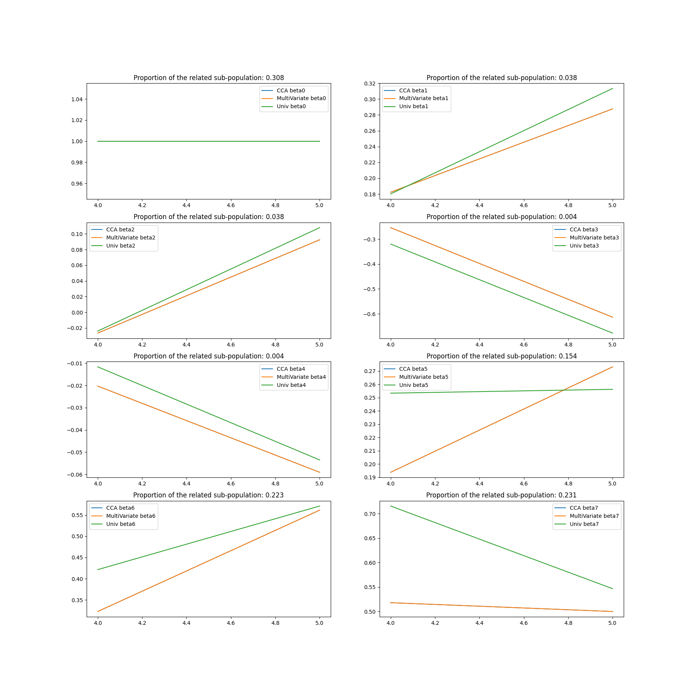
Evolution of the -log10(p-value) as a function of the signal to noise ratio
plt.figure(figsize=(12, 6))
plt.plot(list_noise, -np.log10(np.array(list_multi_pval)),
label='MultiVariate')
plt.plot(list_noise, -np.log10(np.array(list_most_pval)), label='MOSTest')
plt.title(
'Evolution of the -log10(p-value) as a function of the signal to noise '
'volume'
)
plt.legend()
plt.show()
print(format(list_multi_pval[-1], '.2'))
print(format(list_most_pval[-1], '.2'))
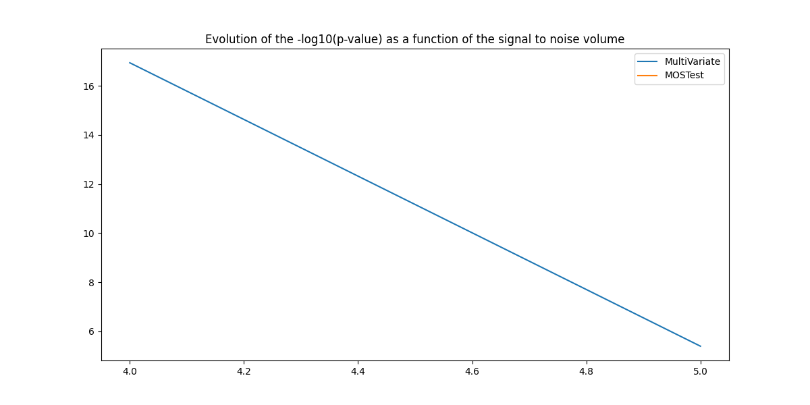
/home/runner/work/cookbook/cookbook/examples/genomic/plot_mostest.py:691: RuntimeWarning: divide by zero encountered in log10
plt.plot(list_noise, -np.log10(np.array(list_most_pval)), label='MOSTest')
4e-06
4e-06
Total running time of the script: (2 minutes 9.382 seconds)
Estimated memory usage: 320 MB